The pictures are not covered by the text copyright. Each is in the public domain or under the free Creative Commons licence stated beside it, and each was verified on its Wikimedia Commons file page on 28 October 2026. Full credits, licences and source addresses for all 84 pictures are listed under Picture Credits at the end of the book. Creative Commons licences: creativecommons.org/licenses.
First edition, 2026.
Before We Begin
O brave new world, that has such people in't!
— William Shakespeare, The Tempest
This is a book about people, written for two small worlds that contain none.
On an old laptop in my house, two sealed universes run day and night. One, EDEN, is a resort that gives its inhabitants everything except space and something to do. The other, LAGOON, is an island that gives them nothing at all: no food they have not gathered, no shelter they have not built, no safety they have not earned against the cats in the long grass. The same eight pairs of founders begin in both. The world is the only difference. I watch, and I do not help.
To build those worlds honestly I had to decide what I believe about the creatures I was putting in them. Not mice, which is where this story will end, but people: what they need, what they fear, how they come to trust one another, why they fight, what a band of thirty does with a winter, and what a city of millions does with its loneliness. So I went back to the books on my shelf, the ones that had shaped how I see our species, and read them again with a single question in mind. What does the long story of humankind, as these authors tell it, say about how people live together?
This book is the answer, told the way I would tell it to a friend across a table late at night. It begins where everything begins, with the Big Bang thirteen point eight billion years ago, and travels through the stars, the making of the Earth and the long history of life, which no book on my shelf covers and for which I have borrowed from the public science of NASA, ESA, the Smithsonian and the U.S. Geological Survey. Then it follows the arc the books broadly agree on: from the deep time before we were quite human, through the talking, gossiping, story-making animal of the Stone Age, the forager band, the fire and the feast, the gift, the field and the granary, the germs and the guns, the state and its slow taming of violence, the mind and its discontents, the search for meaning, the war, the market, the network, the mouse pen that started me on all of this, and finally the year 2026, when a machine trained on the written record of human thought helped me build two small worlds.
A few honest warnings before we set out.
First, these are popular books by scholars, and popular books simplify. Where later scholarship has corrected or challenged them, I say so. Diamond has been accused of letting geography do too much of the work; Pinker's numbers on ancient violence are disputed; Harari tells a better story than the evidence can always carry; Freud is more literature than science now; and Calhoun's mice have been made to say things about cities that Calhoun himself did not believe. I would rather you trusted me a little less and the evidence a little more.
Second, three books on my shelf could not be read in the copies I had. Sapiens, A History of the World in 100 Objects and Embracing Defeat were empty or broken files. Where they appear in these pages, I am drawing on what is widely known of their arguments and on the project's own research notes, and I tell you when I am doing so. Spares is a novel, and I treat it as one.
Third, every chapter ends with a short note on what the simulation takes from it, and a list of sources. The notes point only to mechanisms that are actually in the model, as its design document describes them, or say plainly that an idea is still a candidate. A model is not a claim about people. It is a way of asking a question carefully enough that the answer can surprise you.
The pictures are all free to share: public-domain paintings and photographs, museum images released to everyone, and photographs that their makers licensed for reuse. Their credits are printed beside them and gathered again at the end.
Pull up a chair. It is a long story, and the best part is that it is ours.
Chapter 1
First Light
Every history has to start somewhere, and the honest place to start this one is very far back: before people, before life, before the Earth, before the stars. None of the books on my shelf begin there. Harari starts with the cognitive revolution, Diamond with the last Ice Age, MacGregor with a stone tool. So for this chapter and the next I have stepped off the shelf, and what follows comes from the public science of the space agencies and museums, NASA, ESA and the Smithsonian among them, told as simply as I can. I say so because it matters where a story comes from. The rest of the book is the shelf's; these two chapters are the sky's and the rocks'.
A beginning
About 13.8 billion years ago, everything that now makes up the observable universe was packed into a state of almost unimaginable heat and density, and it began to expand. We call this the Big Bang, though it was not an explosion in space so much as the expansion of space itself. We do not know what, if anything, came before it, and physicists argue about whether the question even makes sense.
What we do know comes from evidence, and the most beautiful piece of it is a faint glow that fills the whole sky. For the first few hundred thousand years, the young universe was a hot fog of particles that light could not pass through. When it had cooled enough, around 380,000 years after the beginning, atoms formed, the fog cleared, and light streamed free for the first time. That light is still arriving, stretched by the expansion of space into microwaves. Two radio astronomers, Arno Penzias and Robert Wilson, stumbled on it in 1965 while trying to get rid of an annoying hiss in their antenna. Satellites since, NASA's COBE and WMAP and ESA's Planck, have mapped its tiny ripples. Those ripples are the seeds of everything that came after.
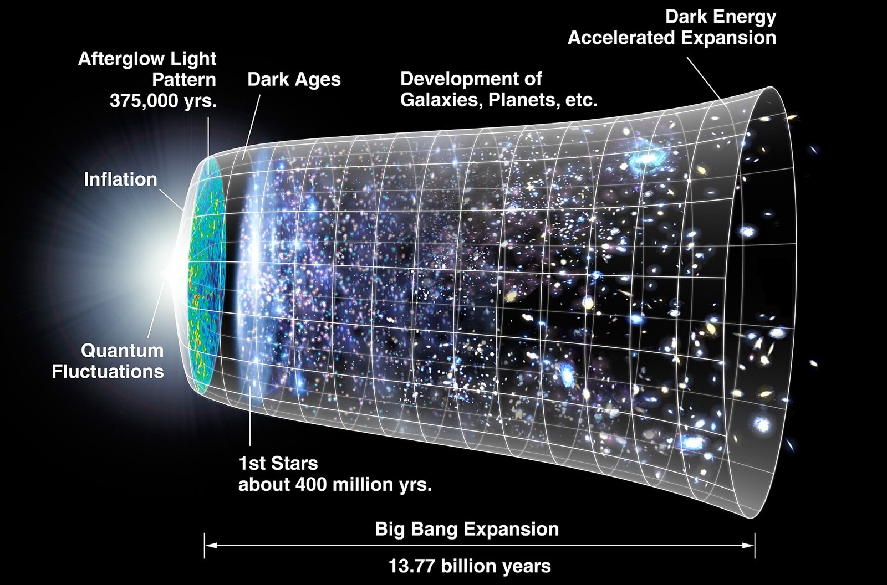
The history of the universe as a widening bell, from the Big Bang through the release of the first light, the dark ages and the first stars, to the galaxies of today. NASA's diagram from the WMAP mission. NASA / WMAP Science Team · Public domain
The first stars
For a hundred million years or more after the light was released, the universe was dark. There were no stars yet, only clouds of hydrogen and helium slowly pulled together by gravity where the ripples had made them slightly denser. Then, in those clumps, the first stars ignited.
Stars are furnaces. In their cores, light elements are crushed together into heavier ones, hydrogen into helium, helium into carbon and oxygen, and in the biggest stars on up the table to iron. When a massive star dies, it can explode as a supernova, scattering those new elements into space, where they are swept up into the next generation of stars and planets. Almost every atom in your body heavier than hydrogen, the carbon in your cells, the oxygen in your lungs, the calcium in your bones, the iron in your blood, was made inside a star that died before the Sun was born. That is not poetry. It is the measured chemistry of the universe.
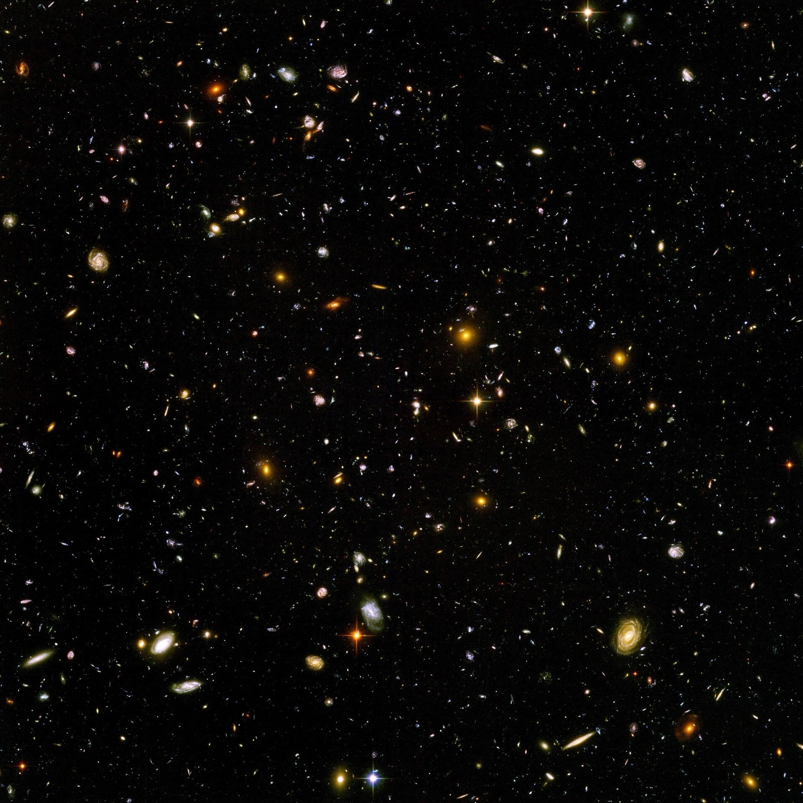
The Hubble Ultra Deep Field: a patch of sky smaller than a grain of sand held at arm's length, in which almost every point of light is a galaxy. Some of this light set out more than thirteen billion years ago. NASA and the European Space Agency · Public domain
Galaxies
Stars gathered into galaxies, and galaxies into clusters, along a vast web of filaments shaped by the ripples in that first light and by the gravity of something we cannot see. Astronomers call it dark matter, because it gives off no light, and they infer it only from how it pulls on everything else. Most of the matter in the universe seems to be of this kind, and we do not know what it is. There is also something called dark energy, which seems to be speeding up the expansion of space, and we understand it even less. It is humbling to begin a history of everything by admitting that most of everything is a mystery.
Our own galaxy, the Milky Way, is a spiral of a few hundred billion stars, about a hundred thousand light-years across. It is one of perhaps two trillion galaxies in the observable universe. In 2003 and 2004 the Hubble Space Telescope stared at a small dark patch of sky for weeks and found it crowded with galaxies, thousands of them, some seen as they were less than a billion years after the Big Bang. Space is not empty. It is full of other places.
The Pillars of Creation in the Eagle Nebula, photographed by Hubble in 2014: columns of gas and dust where new stars are being born today, some 6,500 light-years away. NASA, ESA and the Hubble Heritage Team (STScI/AURA) · Public domain
A star and its planets
About 4.6 billion years ago, in an ordinary arm of the Milky Way, a cloud of gas and dust, enriched by the ashes of earlier stars, collapsed. Perhaps a nearby supernova gave it a push. Most of the material fell to the centre and became the Sun. The rest flattened into a spinning disc, and in the disc, dust stuck to dust, pebbles to pebbles, and over a few tens of millions of years the planets grew. Close to the hot young Sun, only rock and metal could survive, and the small rocky planets formed: Mercury, Venus, Earth and Mars. Further out, where it was cold enough for ice, the giants grew: Jupiter, Saturn, Uranus and Neptune.
The Earth formed about 4.54 billion years ago. It was not a gentle birth. The young planet was battered by collisions, and one of them, with a body about the size of Mars, was so violent that it threw out a ring of molten debris that gathered into the Moon. For hundreds of millions of years the surface was hot, cratered and hostile. Then it cooled. Water, from the planet's own rocks and perhaps from icy comets and asteroids, gathered into oceans. By about four billion years ago, and perhaps earlier, the Earth had a solid crust, an atmosphere, and seas.
The Blue Marble, photographed by the crew of Apollo 17 on 7 December 1972. Africa, the continent where our species began, is at the centre. Harrison Schmitt / NASA, Apollo 17 · Public domain
Why begin here?
You might reasonably ask what all this has to do with a book about people, or with two small worlds on a laptop. My answer is that it sets the scale. Everything that follows in this book, every hunt, feast, war, market and book, happens in the last few hundred thousand years of a story that is 13.8 billion years long. If the whole history of the universe were squeezed into a single year, the Earth would form in early September, the first life would appear in late September, the dinosaurs would die on the 30th of December, and our species would appear about twelve minutes before midnight on the 31st. All of recorded history would fit into the last fifteen seconds.
The other reason is that it reminds me what the universes on my laptop are. They are made of the same stuff as everything else, electrons moving through silicon refined from the rocks of a planet assembled from the ashes of stars. The colony under my bed was imagined by a brain made of star-stuff. So, in their own way, are EDEN and LAGOON.
What the model takes from this
Sources
NASA, "WMAP: Wilkinson Microwave Anisotropy Probe" and "Universe 101" (map.gsfc.nasa.gov), outside the shelf.
ESA, "Planck and the cosmic microwave background" (esa.int), outside the shelf.
NASA, Hubble Space Telescope science pages on the Ultra Deep Field and the Eagle Nebula (science.nasa.gov), outside the shelf.
Smithsonian National Museum of Natural History, "Deep Time" exhibition materials (naturalhistory.si.edu), outside the shelf.
Chapter 2
The Living Planet
endless forms most beautiful and most wonderful have been, and are being, evolved
— Charles Darwin, On the Origin of Species (1859)
This chapter, like the last, comes mostly from outside the shelf: from the Smithsonian's halls of fossils and the public science of geology and biology. Only at its end, when the hominins arrive, does the shelf begin to speak.
The spark
Somewhere on the young Earth, perhaps around deep-sea vents where hot, mineral-rich water poured into the ocean, perhaps in warm shallow pools that dried and refilled, chemistry became biology. We do not know how. We know that the building blocks of life, amino acids and the components of nucleic acids, form readily under the right conditions, and we know that by about 3.5 billion years ago, and quite possibly earlier, there were living cells. The oldest widely accepted traces are stromatolites: layered mounds built up by mats of microbes trapping sediment in shallow water. They still grow in a few salty bays today, most famously at Shark Bay in Western Australia. Looking at them is looking at the oldest way of life on the planet.
Living stromatolites at Shark Bay, Western Australia. Mounds like these, built by microbes, are the oldest widely accepted evidence of life on Earth, more than three billion years old. Happy Little Nomad · CC BY-SA 2.0
For most of the Earth's history, life was microscopic. For roughly two billion years, it was bacteria and their cousins, and nothing else. But those microbes changed the planet. Some of them learned to use sunlight to split water, releasing oxygen as waste. Over hundreds of millions of years, that waste built up in the oceans and then the air, in what geologists call the Great Oxidation Event, around 2.4 billion years ago. It was a catastrophe for the many microbes that oxygen poisoned, and an opportunity for those that learned to breathe it.
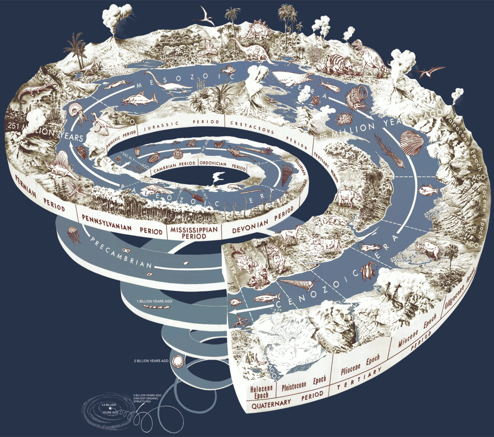
The geological time spiral from the U.S. Geological Survey: the whole history of the Earth, with the first life near the centre and humans a sliver at the very end. U.S. Geological Survey · Public domain
Bodies
Around two billion years ago, one kind of cell swallowed another and, instead of digesting it, kept it. The swallowed cell became the mitochondrion, the power plant in every cell of your body, which still carries its own small piece of DNA. Cells with a nucleus and mitochondria, the eukaryotes, could grow larger and more complex. Much later, perhaps a billion years ago, some of them began to live together as many-celled organisms. Then, around 540 million years ago, in what is called the Cambrian explosion, the fossil record fills almost suddenly with animals: creatures with shells, eyes, legs, jaws and guts, many of them stranger than anything alive today. The Burgess Shale in the Canadian Rockies preserves some of them in extraordinary detail.
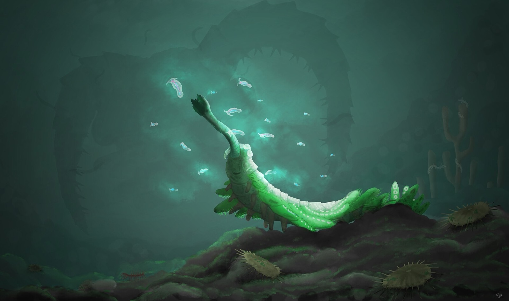
A reconstruction of the Burgess Shale sea, about 508 million years ago, when the fossil record suddenly fills with animals of many strange designs. PaleoEquii · CC BY-SA 4.0
Life moved onto land: first plants and fungi, then insects and other arthropods, then, about 375 million years ago, fish with sturdy fins that could prop themselves up in shallow water. A fossil called Tiktaalik, found in the Canadian Arctic in 2004, is one of the most famous of these in-between animals, part fish and part four-legged walker. Every animal with four limbs, frogs, lizards, birds, cats and you, descends from creatures like it.
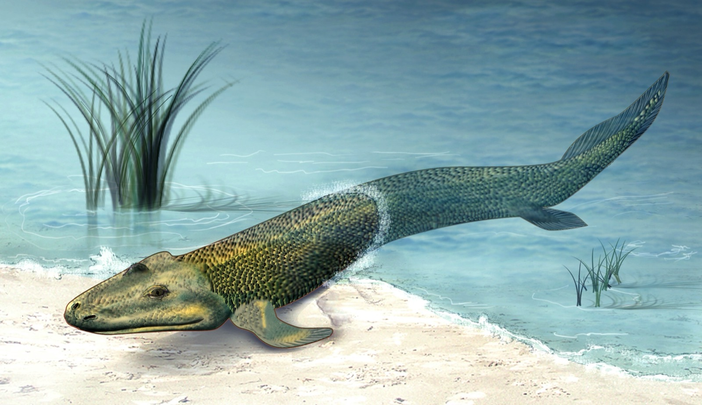
Tiktaalik roseae, about 375 million years ago: a fish with a neck and sturdy fins, of the kind that gave rise to every four-limbed animal. Reconstruction for the U.S. National Science Foundation. Zina Deretsky, U.S. National Science Foundation · Public domain
Dynasties and disasters
The history of life is not a smooth climb. It is punctuated by mass extinctions, at least five great ones, in which most species died. The worst, about 252 million years ago, at the end of the Permian period, killed perhaps nine in ten species in the sea, probably because of enormous volcanic eruptions in what is now Siberia. Out of the survivors came the age of the dinosaurs, which lasted more than 150 million years. Some of the dinosaurs grew feathers, and one line of them learned to fly; Archaeopteryx, found in Germany in the 1860s, just after Darwin published his theory, was among the first fossils to show that birds came from reptiles. Birds are the dinosaurs that survived.
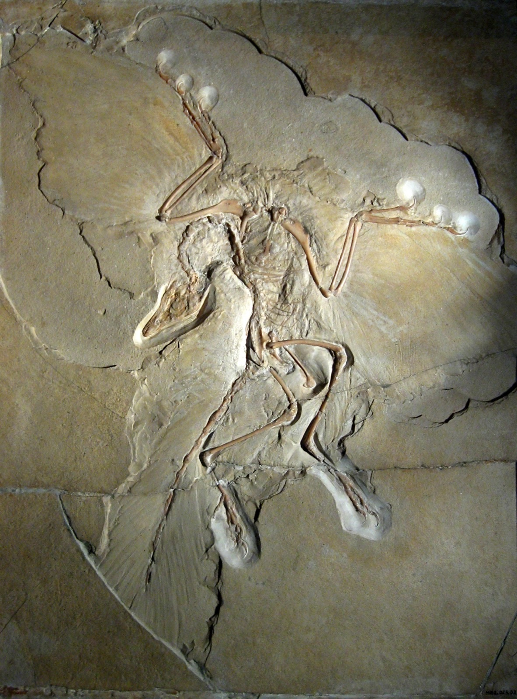
The Berlin specimen of Archaeopteryx, about 150 million years old, found in Germany in 1874: feathers and wings, but also teeth, claws and a long bony tail. H. Raab (Vesta) · CC BY-SA 3.0
The rest did not. About 66 million years ago, an asteroid some ten kilometres wide struck what is now the Yucatán Peninsula in Mexico. The impact, and the darkness and cold that followed, ended the age of the dinosaurs. Small mammals, which had lived in their shadow for a hundred million years, survived and spread into the empty world. One group of them, living in trees, with grasping hands and forward-facing eyes, became the primates.
Darwin's idea
How does any of this happen without a plan? The answer was given in 1859 by Charles Darwin, and independently by Alfred Russel Wallace. Living things vary; some of that variation is inherited; more are born than can survive; and those whose inherited traits suit their surroundings a little better leave a few more offspring. Over enough generations, that simple process, natural selection, can build eyes, wings and brains. Darwin sketched the idea in a notebook in 1837 as a little branching tree, with the words I think written above it. Every chapter of this book, including the chapters about minds and morals, sits on a branch of that tree.
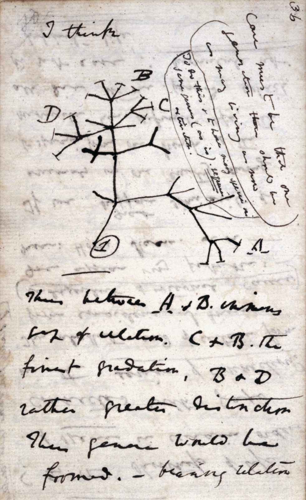
Charles Darwin's first sketch of an evolutionary tree, from his notebook of 1837. Charles Darwin, Notebook B (1837) · Public domain
The apes who stood up
Now the shelf begins again. Around seven million years ago, in Africa, the line that would lead to us split from the line that would lead to chimpanzees and bonobos. Over the following millions of years there were many kinds of upright-walking apes, the hominins. The most famous of the early ones is Lucy, a skeleton of Australopithecus afarensis found in Ethiopia in 1974, about 3.2 million years old: small-brained, ape-like in the face and arms, but walking on two legs. At Laetoli in Tanzania, footprints left in volcanic ash about 3.6 million years ago show that creatures like her walked as we do.
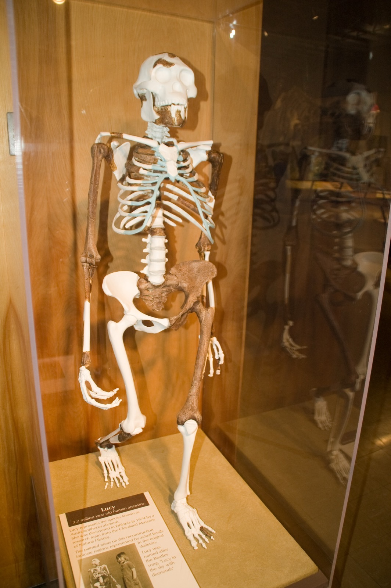
A cast of "Lucy," Australopithecus afarensis, about 3.2 million years old, found in Ethiopia in 1974. She walked upright on a brain hardly bigger than a chimpanzee's. Andrew from Cleveland, Ohio, USA · CC BY-SA 2.0
About 2.5 million years ago, the first stone tools appear, and soon after them the first members of our own genus, Homo. Brains grew. Bodies grew taller. By the time of Homo erectus, nearly two million years ago, there were humans with long legs and modern body proportions, walking out of Africa into Asia. This is where Diamond's first chapter picks up the story, and where the next chapter of this book begins: with a stone tool, and the long, quiet million years in which almost nothing changed.
What the model takes from this
Sources
Smithsonian National Museum of Natural History, "David H. Koch Hall of Fossils — Deep Time" and "Human Origins" pages (naturalhistory.si.edu, humanorigins.si.edu), outside the shelf.
U.S. Geological Survey, "Geologic Time" (pubs.usgs.gov), outside the shelf.
Darwin, Charles. On the Origin of Species. London: John Murray, 1859; Notebook B (1837).
Diamond, Jared. Guns, Germs, and Steel, chapter 1.
Chapter 3
Deep Time and the First Humans
Let me begin with a stone.
It is about the length of a hand, flaked on both faces into a teardrop, with an edge that will still cut. It came out of Olduvai Gorge in Tanzania, and it sits now in a case in the British Museum, where Neil MacGregor chose a tool like it as one of the first objects in his history of the world. Somebody made it more than a million years ago. That somebody was not one of us. It was probably Homo erectus, a long-legged, big-walking cousin who carried this design across Africa and into Asia and then kept making it, with small refinements, for well over a million years.
Hold that number for a moment, because it is the first lesson of deep time. The handaxe is the most successful technology our family has ever had. It outlasted every empire by a factor of a thousand. And for most of that time, almost nothing changed. The makers of this stone had fire, eventually. They hunted and scavenged and gathered. They looked after their young. But if you had visited them every ten thousand years, you would have found them doing much the same thing each time. There was no history yet, only life.
Olduvai Gorge in Tanzania, where layer upon layer of ancient lake beds have yielded stone tools and hominin fossils spanning nearly two million years. gailhampshire · CC BY 2.0
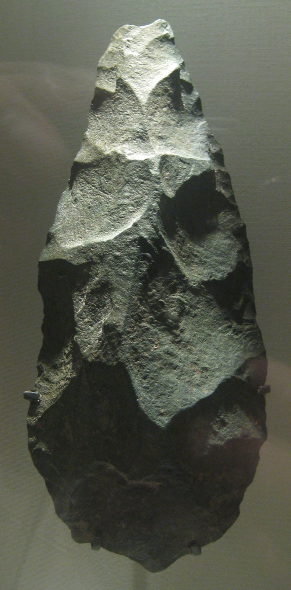
A handaxe from Olduvai Gorge, Tanzania, more than a million years old. The design was made, with small changes, for over a million years — longer than any technology since. BabelStone (photograph of an object in the British Museum) · CC0
The family tree that was really a bush
When I was at school, human evolution was drawn as a line of figures walking left to right, each a little more upright and a little less hairy than the last, ending in a man with a spear. Every book on my shelf has abandoned that picture. Our family was a bush, not a ladder. For most of the last two million years, several kinds of human walked the earth at the same time: erectus in Asia, the Neanderthals in Europe and western Asia, the Denisovans whom we know mostly from a finger bone and from the traces they left in living people's DNA, the tiny "hobbits" of the island of Flores, and others still being dug up.
Our own species, Homo sapiens, appears in Africa around three hundred thousand years ago; the oldest bones that look roughly like ours come from Jebel Irhoud in Morocco. For a very long time, these early sapiens were not obviously special. They made tools a little better than their neighbours' and sometimes not. They left Africa more than once and sometimes failed to stay. Then, somewhere between seventy and fifty thousand years ago, a population of them left and kept going.
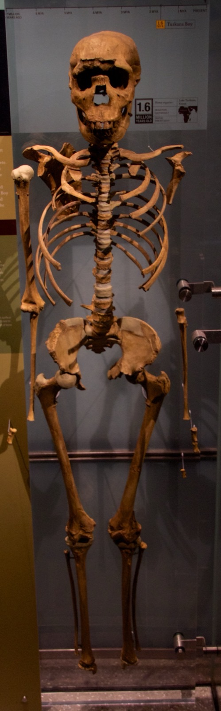
"Turkana Boy," a Homo erectus youth who died about 1.5 million years ago near Lake Turkana in Kenya: already tall, long-legged and built for walking. Cast at the American Museum of Natural History. Mike Peel (www.mikepeel.net) · CC BY-SA 4.0
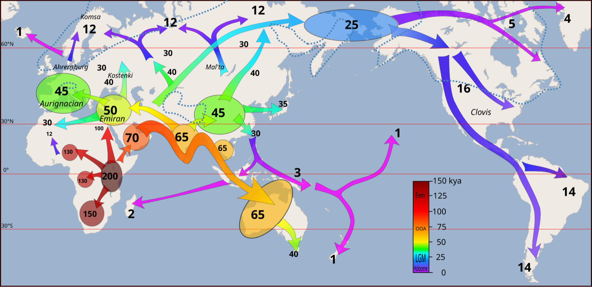
The peopling of the world, as reconstructed from fossils, archaeology and genetics. Figures are thousands of years ago; every one of them is argued over. Dbachmann (map drawn on a public-domain USGS shoreline base) · CC BY-SA 4.0
Out of Africa, and into everywhere
What followed is the strangest expansion in the history of large animals. Within a few tens of thousands of years, sapiens reached southern Asia, crossed open water to Australia (which no human had reached before), pushed into the cold of Ice Age Europe and Siberia, and eventually walked or paddled into the Americas. Along the way they met the other humans. The genetic record says they did not only fight them; they had children with them. Most people alive today outside Africa carry a small share of Neanderthal DNA. Some people in Melanesia and parts of Asia carry Denisovan DNA as well. The cousins did not entirely vanish. They are in us.
And yet they did vanish as peoples. By about forty thousand years ago the Neanderthals were gone, and soon the others were too. Why? Harari, in Sapiens, offers two stories, the interbreeding story and the replacement story, and lets the truth sit somewhere in between: our ancestors mixed with the others a little and outcompeted them a great deal. The replacement, if that is the word, was not necessarily a war. Being slightly better at finding food, slightly better at sharing news across a valley, slightly quicker to recover from a bad winter, is enough over a thousand generations. Evolution does not need a battle. It needs a margin.
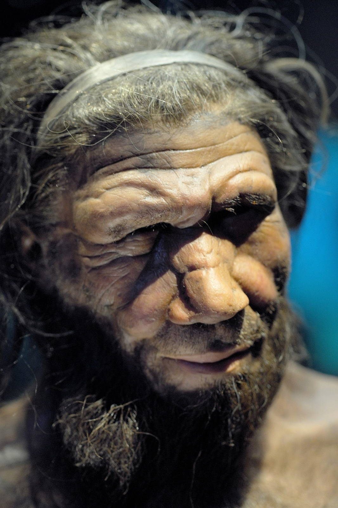
A reconstruction of a Neanderthal man at the Natural History Museum, London. Most people alive today outside Africa carry a small share of Neanderthal DNA. Werner Ustorf · CC BY-SA 2.0
The same pattern repeated with the animals. Diamond, in the first chapter of Guns, Germs, and Steel, points out that the arrival of modern humans in Australia and the Americas is followed, closely enough to be suspicious, by the disappearance of most of the continents' big animals: the giant kangaroos and the marsupial lions, the mammoths, the ground sloths, the American horses and camels. The animals there had never seen a human hunter and did not know to run. He argues they were hunted out, or at least pushed over the edge; others blame climate, and the honest answer is that both probably mattered and the mix differed from place to place. But the image stays with me: a naive animal standing still while a new kind of predator walks up to it. Every island that people reached for the first time, from New Zealand to Madagascar, tells a version of the same story.
A body made for walking, a brain made for company
Bloom's Psych and Pinker's Blank Slate both insist on a point that is easy to forget when we think about history: the brain that built cities is the brain that evolved on the savannah, and it has not had time to change much since. Ten thousand years of farming is about four hundred generations. That is enough for some changes, like the ability of adults in herding populations to digest milk, but not enough to rebuild the mind.
So what kind of creature were we, at the end of this long apprenticeship? We were a long-distance walker with a large, expensive brain, born helpless and slow to mature, unable to survive alone. Our children needed years of feeding by more than one adult. Our mothers needed help in birth, because a big-headed baby passing through a pelvis built for walking is a tight fit; midwifery may be one of our oldest professions. Our food came in patches, unpredictably, and was best shared. Our dangers were large animals, accidents, disease, and each other. Everything about us was tuned to life in a group of a few dozen people who knew one another all their lives.
That, more than any single trait, is the inheritance this book will keep returning to. We are animals built for a small world. The rest of history is the story of what happened when we kept building bigger ones.
What we do not know
I want to end this first chapter with a confession on behalf of the whole field. Deep time is mostly darkness. A few bones, a few tools, a few hearths, and lately a great deal of DNA, are all we have to reconstruct hundreds of thousands of years of lives. Every date in this chapter has been revised in my lifetime and will be revised again. When Harari or Diamond tell this story crisply, they are making a choice to tell it crisply, and it is a good choice for a reader, but the crispness belongs to the telling, not to the evidence.
What does survive is the shape. A small population of a talkative, cooperative, inventive ape left a continent and filled a world, replacing or absorbing its relatives and changing every landscape it entered. Hold that shape. LAGOON is a small version of it.
What the model takes from this
Sources
Diamond, Jared. Guns, Germs, and Steel: The Fates of Human Societies. Norton, 1997/1999. Prologue and chapters 1–2.
Harari, Yuval Noah. Sapiens: A Brief History of Humankind. Harper, 2015 (the shelf copy was unreadable; argument summarised from the project's research notes and general knowledge).
MacGregor, Neil. A History of the World in 100 Objects. Allen Lane, 2010 (the shelf copy was unreadable; the Olduvai handaxe is one of its early objects).
Bloom, Paul. Psych: The Story of the Human Mind. Ecco, 2023.
Pinker, Steven. The Blank Slate: The Modern Denial of Human Nature. Penguin, 2002.
Chapter 4
The Talking Ape
What a chimera then is man!
— Blaise Pascal, Pensées
About forty thousand years ago, in a cave in the Swabian Jura of southern Germany, someone sat with a tusk of mammoth ivory and a set of flint tools and spent what experiments suggest was hundreds of hours carving a figure about thirty centimetres tall. It stands upright like a person. Its body is human. Its head is a cave lion's. It was found in pieces in 1939, in a cave called Hohlenstein-Stadel, and reassembled over decades. Archaeologists call it the Lion-man.
There is no lion-man in nature. Whoever carved it was showing us something that existed only inside human heads: an idea, a spirit, a story. That is why Harari makes it a kind of mascot for what he calls the Cognitive Revolution, and it is why I have stood in front of it in my imagination many times. It is one of the oldest surviving proofs that our ancestors could believe in things they had never seen.
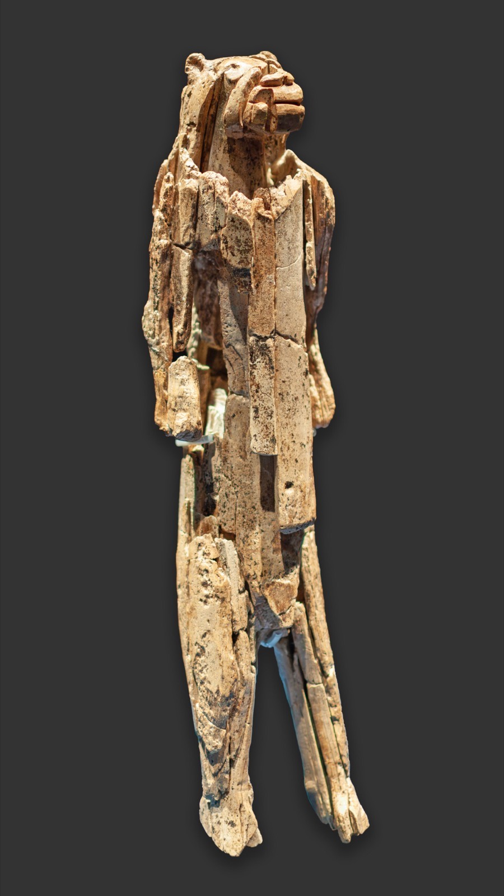
The Lion-man of Hohlenstein-Stadel, carved from mammoth ivory about forty thousand years ago: a creature that exists only in a story. Dagmar Hollmann · CC BY-SA 4.0
The revolution in the head
Harari's argument, as the project's notes summarise it, runs like this. Somewhere around seventy thousand years ago, sapiens began to behave differently: better tools, ornaments, long-distance trade in shells, art, burial with goods, and that rapid spread across the planet. Something changed in how they thought and talked. He is careful to say we do not know what, perhaps a genetic change in the wiring of the brain, perhaps not. What matters is what the new language could do.
Many animals can say "careful, a lion." Human language, Harari suggests, did two further things. First, it let us gossip: to talk about other people who are not present, who is reliable and who cheats, who is sleeping with whom, who is quarrelling. A band that can gossip can track a web of relationships far larger than any individual could observe, and can punish cheats by reputation rather than by fists. The anthropologist Robin Dunbar argued that gossip is grooming at a distance: a primate keeps its friendships by picking through a friend's fur, which takes time and works one friend at a time, and humans replaced it with talk, which can bond several people at once. Dunbar's famous number, about a hundred and fifty, is roughly the size of a group that can hold together on personal knowledge alone.
The second thing was fiction. We can talk about things that do not exist: the lion-spirit, the ancestor in the river, the tribe's founding hero, and much later the nation, the company, the law, the dollar. Harari's boldest claim is that this capacity, to believe together in shared fictions, is what lets strangers cooperate. Two people who have never met will trust each other because they both believe in the same god, or carry the same money, or obey the same court. No chimpanzee can do that. A chimpanzee's world ends at the edge of the troop it knows.
Where Harari is stretching
I love this argument, and I want to be fair to its critics, because the idea of a single sudden revolution has not aged well. Archaeologists now find many of the "modern" behaviours, such as ornaments, pigments and fine blades, appearing in Africa long before seventy thousand years ago, flickering on and off in different places rather than arriving as one switch. The better picture may be a slow accumulation of culture that only becomes visible when populations grow large and connected enough to keep what they learn. That is a point Pinker, Diamond and Bloom would all recognise: inventions are easy to lose in small, isolated groups and easy to keep in large, networked ones.
Bloom adds a caution from psychology. Language is extraordinary, and children acquire it with a speed and regularity that suggests the mind is built for it. But the capacity for shared belief is not unique to language-made fictions. Even infants, in Bloom's account of developmental studies, expect agents to have goals, prefer helpers to hinderers, and divide the world into us and them. Fictions build on a social mind that was already there.
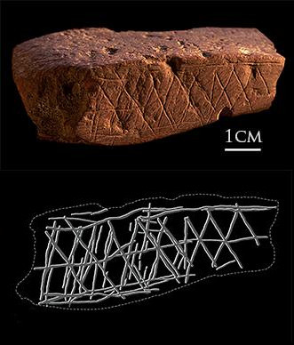
Engraved ochre from Blombos Cave, South Africa, about 75,000 years old: an abstract pattern made long before the supposed revolution of seventy thousand years ago. Chris S. Henshilwood · CC BY-SA 4.0
So I take Harari's revolution as a parable rather than an event. The parable is still true in its way. Somewhere in our deep past, a talking animal learned to hold a world in its head, share it with others, and act on it together.
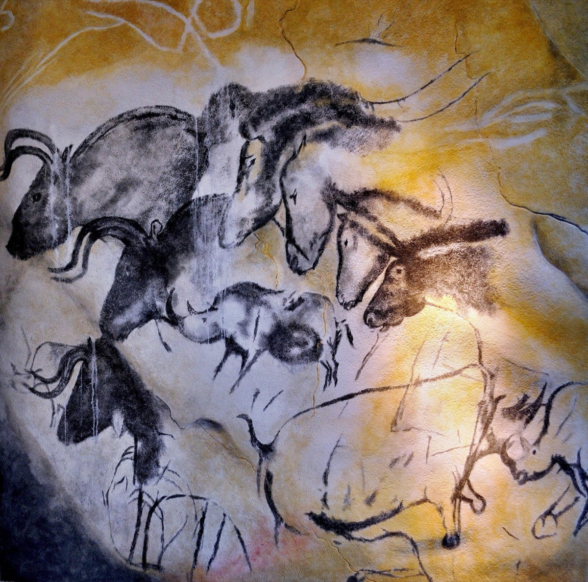
Horses on the wall of the Chauvet cave in southern France (museum replica), drawn more than thirty thousand years ago with a sureness that still startles. Thomas T. · CC BY-SA 2.0
The painted dark
If the Lion-man is a story in ivory, the caves of France and Spain are stories in pigment. At Chauvet, more than thirty thousand years ago, someone drew horses, lions, rhinos and bears with charcoal across the walls of a cave so dark that the work could only have been done, and seen, by firelight. At Lascaux, about seventeen thousand years ago, aurochs and deer and horses run across the ceilings. We do not know what these images meant. Hunting magic, initiation, a map of the spirit world, a gallery, a classroom: every theory has been tried. What we do know is that people went deep underground, in flickering light, to make and to see them together. Whatever they meant, they were shared.
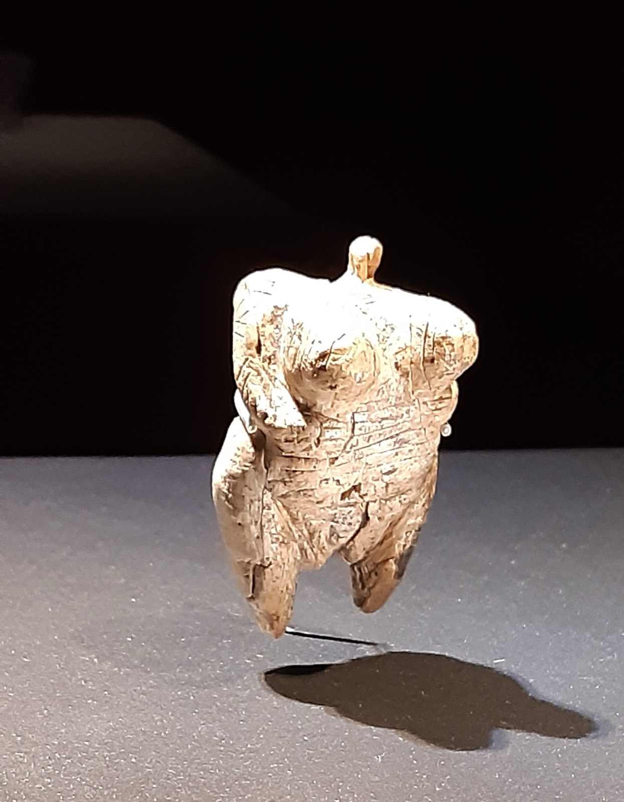
The Venus of Hohle Fels, carved from mammoth ivory about 40,000 years ago in the same German valleys as the Lion-man: the oldest known sculpture of a human body. Catatine · CC BY-SA 4.0
Gossip, lore and the size of a world
There is a quiet consequence in all of this that matters a great deal for the worlds on my laptop. If personal knowledge holds a group together up to about a hundred and fifty, then a group that grows beyond that faces a choice. It can split, with the losers of some quarrel walking off to found a new camp. It can fight. Or it can find a story big enough to hold everyone: a common ancestor, a shared totem, a rite. The anthropological record is full of all three. The fiction, in other words, is not decoration on top of human life. It is the thing that lets a human group become larger than a family without falling apart.
This also tells us something about the opposite case. A group that never needs to cooperate beyond its own small circle has no need for a large shared story, and a group of animals that cannot tell stories at all has no way to reorganise itself once its old roles are full. Keep that thought for the last chapters, where a colony of mice meets exactly that wall.
What the model takes from this
Sources
Harari, Yuval Noah. Sapiens (shelf copy unreadable; argument from the project's research notes) and Nexus: A Brief History of Information Networks from the Stone Age to AI. Random House, 2024, chapter 2.
Bloom, Paul. Psych, chapters 6 ("The Ape That Speaks") and 11–12.
Pinker, Steven. The Blank Slate, chapters 3–4.
Dunbar, Robin. Grooming, Gossip, and the Evolution of Language. Harvard, 1996 (cited via Harari).
Chapter 5
A Day in the Band
the imponderabilia of actual life
— Bronisław Malinowski, Argonauts of the Western Pacific (1922)
Let me try to describe an ordinary day, twenty thousand years ago, in a band of about thirty people. Everything in this picture is pieced together from archaeology and from the foragers who survived into the age of anthropology, the !Kung and Hadza of Africa, the Aborigines of Australia, the peoples of the Arctic and the Amazon. Each of them is a modern people with its own history, not a living fossil, and every one of them differs from the others. But taken together they suggest the outline.
The day begins before sunrise with fire. Someone has kept the embers alive overnight, and the first job is to feed them. Small children sleep curled against their mothers; babies nurse whenever they want, through the night and the day, and will keep nursing for three or four years. That long nursing is one reason forager women typically have children about four years apart: a mother who carries her child on long walks cannot easily carry two, and her body, thin from walking and nursing, does not conceive easily until the older one is weaned.
By mid-morning the band has divided. Some go out to gather: roots, nuts, berries, honey, shellfish, small animals. In most foraging societies this is reliable food and makes up much of the diet. Others go out hunting, more often men than women, though the division is never perfect. Hunting is unreliable. A Hadza hunter can go weeks without a large kill, and the anthropologists who have counted find that big game is rare for any one hunter in any one week. When a large animal does fall, the meat is shared widely, sometimes with an elaborate etiquette that seems designed to stop the successful hunter from boasting.
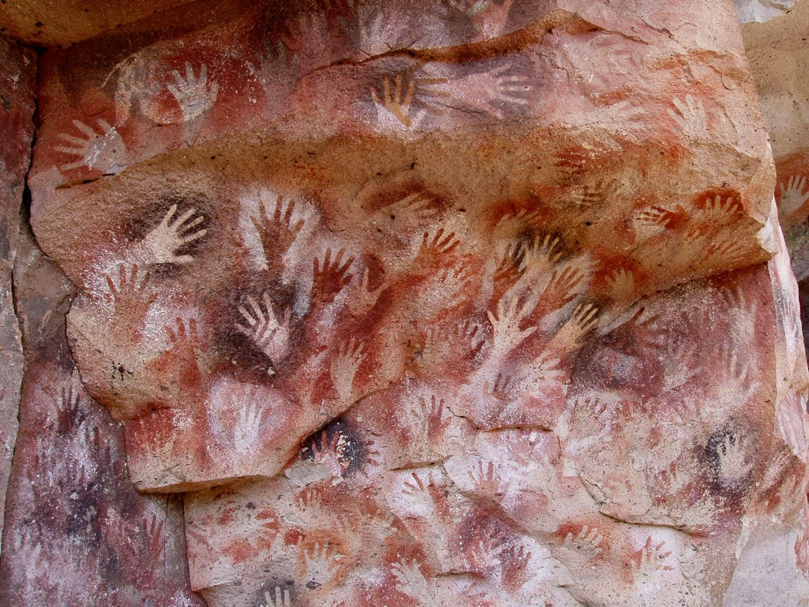
Stencilled hands at the Cueva de las Manos in Patagonia, Argentina, many of them made around nine thousand years ago. Each was a person saying: I was here, with the others. Mariano · Public domain
The affluent and the hungry
A famous argument from the 1960s, made by Marshall Sahlins after the !Kung studies of Richard Lee, called foragers "the original affluent society": they worked fewer hours than farmers or factory workers and spent the rest of their time resting, talking, visiting and playing. Harari takes this idea up enthusiastically in Sapiens, as the project's notes record, and it is the foundation of his later case against agriculture.
There is truth in it and there is romance in it. Foragers in good environments often do work fewer hours on getting food than farmers do. But the hours leave out processing, fetching water and firewood, making tools and clothes, and caring for children, and they leave out the bad seasons. Lean times were real. Children died often, of disease and accident. The arithmetic of a forager life is a long tail of hardship under an average that looks pleasant.
What the forager life clearly did give was variety. A band ate dozens or hundreds of species, and its members moved through a landscape they knew intimately, making many small decisions every day. The skeletons of early foragers are, on average, taller and healthier than those of the first farmers who replaced them. That will matter in a later chapter.
Sharing and the levelling of pride
The most striking thing about most surviving foragers is how hard they work to keep anyone from rising too high. Food is shared, and a person who hoards is shamed. A man who kills a large animal is teased about how scrawny it is. Leaders exist, but they lead by persuasion and can be ignored. Anthropologists call this a "reverse dominance hierarchy": the group collectively dominates anyone who tries to dominate it.
Why? Partly because sharing is insurance. If I bring in a kill today and share it, you will share yours next week, and both of us eat more steadily than either would alone. Partly because a band of thirty people cannot afford a tyrant; anyone who oversteps can be abandoned, mocked or, in the last resort, killed. And partly because the alternative, escalating rivalry, is dangerous in a world without police.
Hunters dancing in the bush in Tanzania. Among many foragers, song and dance accompany the return from a hunt and the sharing of meat. Arnold Tibaijuka · CC BY-SA 4.0
Violence in the band
Here the books disagree sharply, and I want to give you both sides.
Pinker, in The Better Angels of Our Nature, assembles evidence from skeletons and from ethnographies to argue that forager and tribal life was, on average, far more violent than life in states. In his tables, the share of deaths caused by other people runs from a few percent to more than half in some groups, with an average around fifteen percent; in modern states it is a tiny fraction of that. Raids, ambushes, revenge killings and killings within the band over women and insults all appear. Young men are at the centre of most of it.
His critics, especially Douglas Fry and Brian Ferguson, reply that his samples mix true mobile foragers with settled horticulturalists and with peoples already disrupted by colonial contact, and that the simplest bands, those most like our deep ancestors, often show low rates of lethal violence. They argue that war, as organised group killing, is mostly a product of settlement, property and population pressure.
My own reading is that both are partly right. Homicide, especially by young unpaired men over status and sex, seems to have been common in many small-scale societies. Organised war, with its stockades and massacres, becomes far more visible after farming. A forager's world was neither Eden nor a battlefield; it was a place where a quarrel had no court to go to.
Sex, love and children
The foragers we know are mostly serially monogamous: people pair, usually with a clear public recognition, and many stay together for life, though divorce is common and easy. Polygyny exists but is usually limited to a few men. Fathers in most such societies contribute more care than any other primate father does, though far less than mothers. Grandmothers matter enormously; in the Hadza studies, a grandmother's foraging measurably improves the growth of her daughter's children.
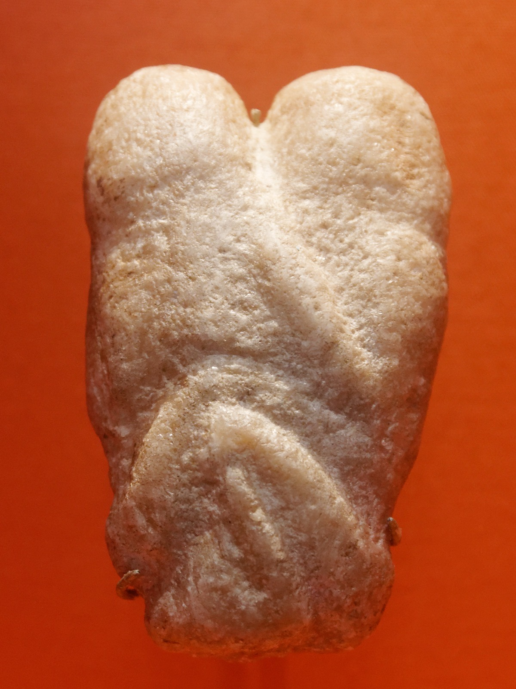
The Ain Sakhri lovers, carved from a calcite pebble about eleven thousand years ago near Bethlehem, now in the British Museum: perhaps the oldest known image of a couple making love. Marie-Lan Nguyen · CC BY 2.5
Children in forager bands are given remarkable freedom. They play in mixed-age groups, learn by watching and joining in, and are rarely punished physically. They are also exposed to risk in ways that would alarm a modern parent. Pinker, following Judith Rich Harris, suggests in The Blank Slate that children are socialised mostly by their peers rather than by their parents' style, and the mixed-age play group of the forager band is exactly where that would happen. Pinker also documents, uncomfortably, that infanticide in the hardest circumstances was practised in many societies as triage; a mother who could not raise two children at once sometimes could not keep both. I mention it because a history that leaves it out is not honest, and because it shows how tightly a forager's life was bound to the arithmetic of food.
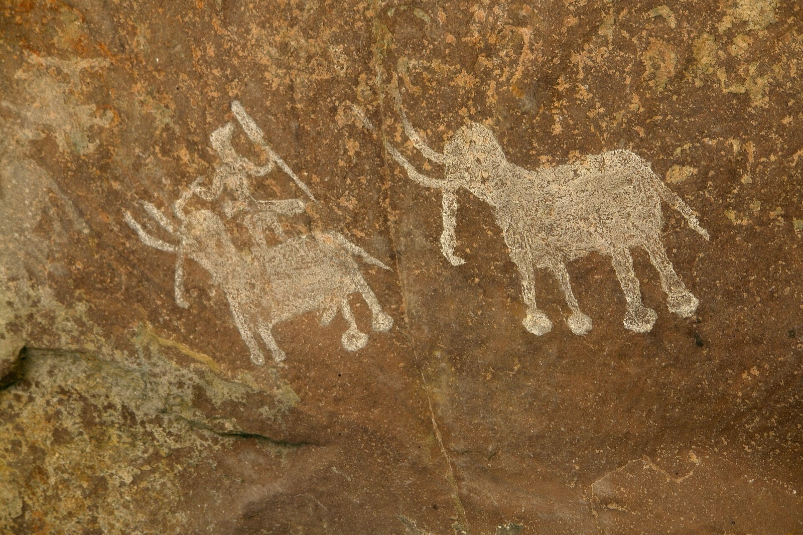
Paintings of people and animals in the rock shelters of Bhimbetka, central India, where people lived and painted for many thousands of years. Yann (Wikimedia Commons user) · CC BY-SA 4.0
What a band is
Put these pieces together and you get a picture of the human social world as it was for most of our species' existence. A group small enough that everyone knows everyone. Food that must be found, carried and shared. Leaders without power. A long childhood watched by many eyes. A fire at the centre of every night. And violence that, when it came, came from people you knew.
Malinowski, whom we will meet properly in a later chapter, told anthropologists to attend to the small things: how people eat, how they joke, who sits by whom at the fire. That is where the life of a band is lived. The great events of history are rare. The days are many.
What the model takes from this
Sources
Pinker, Steven. The Better Angels of Our Nature: Why Violence Has Declined. Viking, 2011, chapter 2.
Pinker, Steven. The Blank Slate, chapters 18–19.
Diamond, Jared. Guns, Germs, and Steel, chapter 4 (birth spacing).
Harari, Yuval Noah. Sapiens (shelf copy unreadable; "original affluent society" theme via the project's research notes).
Fry, Douglas P., and Patrik Söderberg. "Lethal Aggression in Mobile Forager Bands." Science 341 (2013) — the main published challenge to Pinker's figures.
Hawkes, Kristen, et al. Studies of Hadza foraging and grandmothering, 1989–1997.
Chapter 6
Fire, Drink and the Dance
wine that maketh glad the heart of man
— Psalm 104:15, King James Version
Night falls fast near the equator. Picture the band from the last chapter as the light goes: people drifting back to camp with what they found, the fire built up, the meat and roots cooking, children falling asleep in laps, and the talk beginning.
Fire is the oldest technology after the stone tool, and it changed us more than any other. The primatologist Richard Wrangham argued that cooking made our bodies: cooked food is softer and yields more energy, so our guts could shrink and our brains could grow. Whether or not that story is complete, fire did something else that may matter as much. It made the night social. Daylight is for work, scattered across the landscape. Firelight gathers everyone into one small circle, in a darkness that hides predators, and there is nothing to do but talk. Anthropologists who have recorded forager conversations find that daytime talk is about practical things, food and work and complaints, while firelit talk turns to stories: about people far away, about the ancestors, about the spirits. Harari, in Nexus, makes the fire circle the cradle of the stories that hold human networks together. A band becomes a society around a hearth.
Firelight gathers a band into one small circle. Anthropologists find that talk around the fire turns from work to stories. kallerna · CC BY-SA 3.0
Why do we get drunk?
Edward Slingerland's Drunk asks a question that sounds frivolous and turns out to be profound. Alcohol is a poison. It damages the liver and the brain, makes us clumsy and stupid, and kills a great many people every year. Why, then, has almost every human culture sought it out, or found some other intoxicant, and made it central to its feasts and its religion?
The standard scientific answer, Slingerland says, has been that intoxication is an evolutionary accident: our reward systems evolved to make us enjoy useful things, and clever primates found a way to trick them, as they did with junk food and pornography. He thinks this is wrong, or at least badly incomplete. If drinking were only a costly mistake, cultures that drank should have lost out to sober ones over thousands of years, and genes that made alcohol more unpleasant should have spread widely. They did not.
His alternative is that intoxication solves real problems for a species like ours. We are cooperative primates who must trust strangers, and creative primates who must sometimes think outside our habits, and both of these are hard for an animal whose prefrontal cortex is constantly watching, calculating and controlling. Alcohol turns down the prefrontal cortex for a while. A slightly drunk person is worse at lying, more open, more playful, more emotional, more trusting and more trustworthy. A group that drinks together lowers its guard together. Slingerland cites experiments in which groups of strangers who drank together showed more shared smiles, more conversation and more reported bonding than groups who drank a placebo.
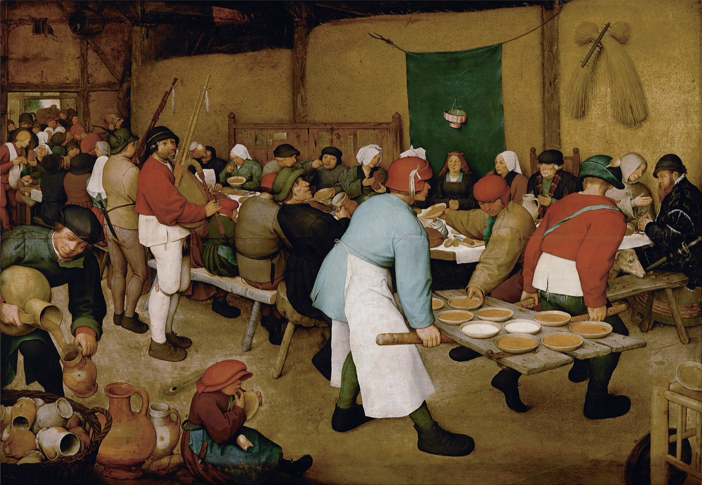
Pieter Bruegel the Elder, The Peasant Wedding (1567 or 1568). The feast is where a community renews itself, and drink is how it lowers its guard. Pieter Bruegel the Elder (image: Google Arts & Culture) · Public domain
Beer before bread?
One of the most exciting ideas in the book concerns a hilltop in southeastern Turkey called Göbekli Tepe. Between about 9600 and 8200 BCE, people who were still foragers gathered there and built circles of huge T-shaped limestone pillars, some weighing ten to twenty tonnes, carved with foxes, boars, snakes, vultures and predators. Building them took hundreds of people. Slingerland notes the large stone vessels found at the site and the suggestion, made by some of the excavators, that they were used to brew a kind of beer from wild grain, which would have fuelled the feasts that drew the builders together.
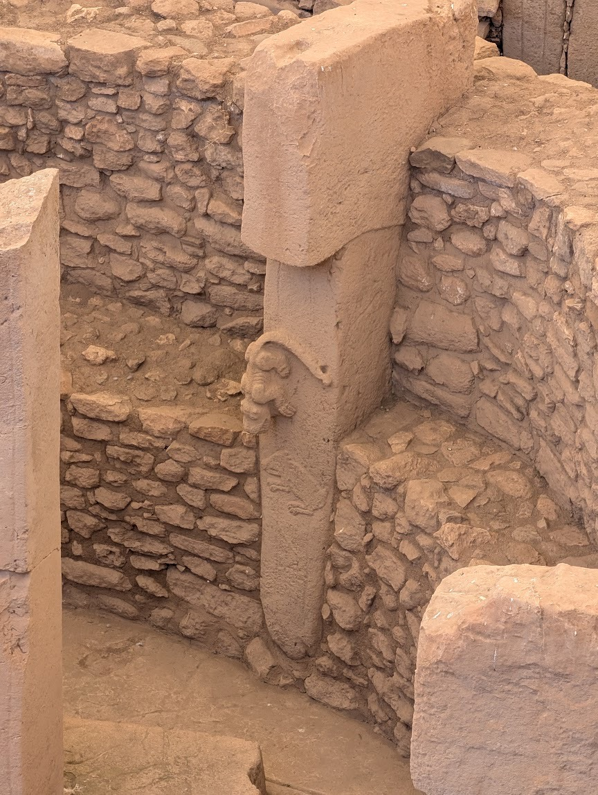
A predator descends above a wild boar on Pillar 27 at Göbekli Tepe, carved by foragers more than eleven thousand years ago. Kerimove · CC0
If that is right, it reverses the usual order. Instead of farming first, then surplus, then temples and feasts, the feast came first, and the desire to hold feasts, with plenty of grain to brew, may have helped push people towards cultivating grain. I should be honest that this is contested. The chemical evidence for brewing at Göbekli Tepe is suggestive rather than conclusive, and later work has emphasised that the site also had ordinary houses and daily life. The "beer before bread" hypothesis is an invitation, not a result. But even its critics agree on the main point: people were gathering in large numbers for ritual before they were farmers.
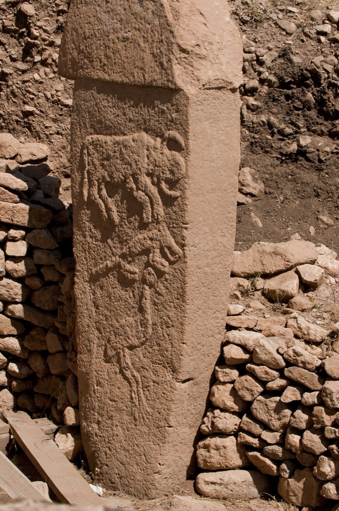
One of the enclosures at Göbekli Tepe. These pillars were raised by people who did not yet farm. Teomancimit · CC BY-SA 3.0
Durkheim's electric crowd
Émile Durkheim, the French founder of sociology, would not have been surprised by any of this. In The Elementary Forms of Religious Life, published in 1912, he drew on reports of Aboriginal Australian ceremonies to argue that religion begins not with belief in gods but with the experience of the gathered group. For most of the year, he wrote, the clans lived scattered in small bands, working hard and dull. Then they came together, and in the crowd, with chanting, dancing and sometimes intoxication, people felt lifted out of themselves into something larger. He called this collective effervescence.
That feeling, Durkheim argued, is real, and people need a name for its source. They find one in a symbol, a totem animal or plant, which becomes sacred: set apart, protected, honoured. When people worship the totem, they are, without knowing it, worshipping their own society, the force they feel acting on them when they are together. A rite renews that force. Without regular rites, the sense of belonging fades.
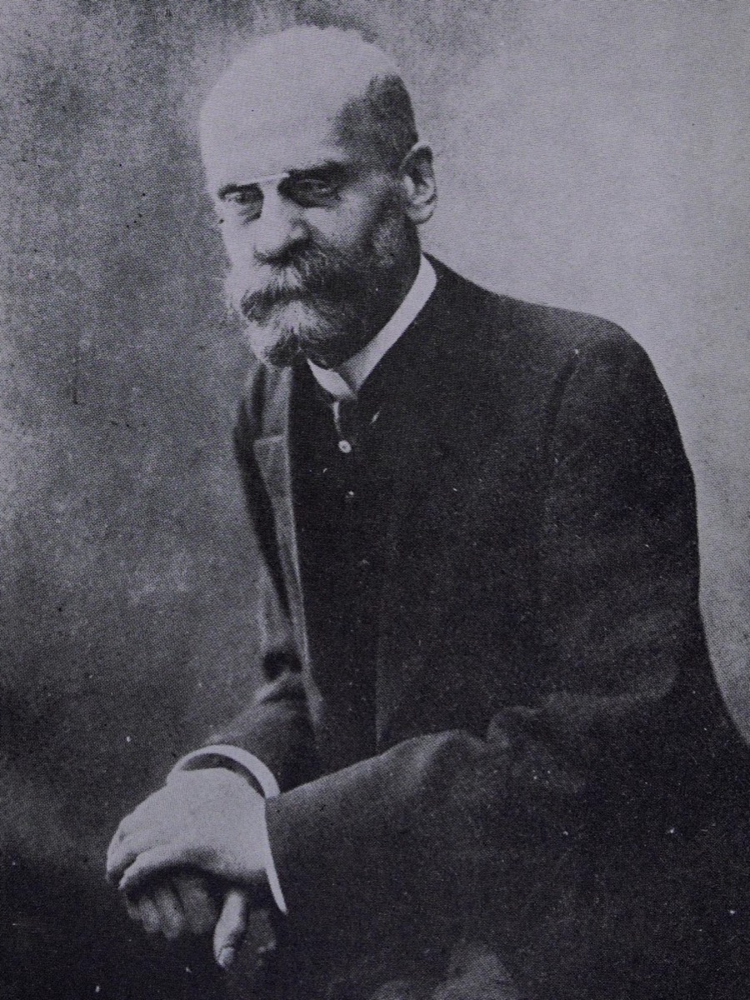
Émile Durkheim (1858–1917), who argued that the sacred is the group made visible to itself. Unknown photographer · Public domain
The commentary on Durkheim in my shelf's four-volume Routledge set is mostly concerned with his method and his politics, and it is fair to add that his evidence was second-hand: he never visited Australia, and the ethnographies he relied on are now seen as partial. But his central idea has worn well, and Slingerland's book can be read as its chemistry. The feast, the dance and the drink do something to people that makes them trust one another, and a society that stops gathering becomes a crowd of strangers.
The dark side of Dionysus
Slingerland is clear-eyed about the costs. Alcohol is the one common drug that reliably raises physical aggression, especially in people already inclined to it. And he makes a distinction I think about often. For most of history, drinking was social: done in groups, at feasts, under the eyes of others, who limited the harm. Two modern changes broke that. Distillation, which arrived in Europe in the late Middle Ages, multiplied the strength of drink far beyond anything the body had met before. And modern life made solitary drinking easy: a bottle at home, alone, with no one watching. A drinking group watches over its members. A lone drinker has no one.
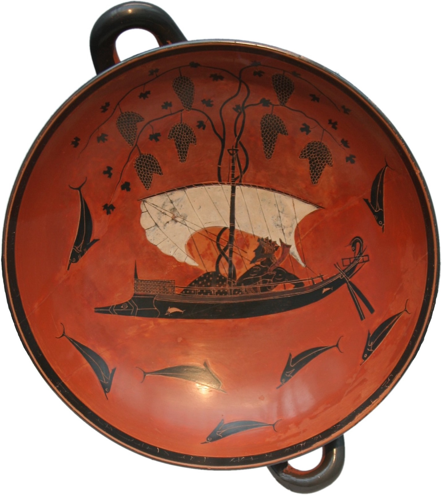
The Dionysus cup by the potter-painter Exekias, Athens, about 530 BCE: the god of wine sails a ship that sprouts grapevines. Staatliche Antikensammlungen, Munich. Matthias Kabel (photograph); cup painted by Exekias · CC BY 2.5
That idea, of a group that keeps each other safe by keeping each other in view, is one I have borrowed for the night in LAGOON, though not in the way Slingerland meant it.
What the model takes from this
Sources
Slingerland, Edward. Drunk: How We Sipped, Danced, and Stumbled Our Way to Civilization. Little, Brown Spark, 2021, chapters 1–5.
Durkheim, Émile. The Elementary Forms of Religious Life (1912), read here through Gane, Meštrović, Münch and Hirst (eds.), Routledge Library Editions: Émile Durkheim, 4 vols., 2022.
Harari, Yuval Noah. Nexus, chapter 2.
Wrangham, Richard. Catching Fire: How Cooking Made Us Human. Basic Books, 2009 (cited for context; not on the shelf).
Chapter 7
The Oldest Stories
And the earth was without form, and void
— Genesis 1:2, King James Version
Every people I know of has a story about how the world began, and almost all of them begin in the same place: with chaos. Water without shore, darkness without light, a formless mass, a void. Then something, a god, a word, a divided egg, an animal diving to the bottom of the sea to bring up mud, separates one thing from another, and there is a world. Light from darkness, land from water, above from below, us from them.
I have spent a good deal of time wondering why that shape is so common. The answer I find most satisfying is that it is not really about the cosmos at all. It is about what it feels like to be a small group of people trying to make a life in a world that does not care whether they live. Order is what you build. Chaos is what is always waiting outside the firelight.
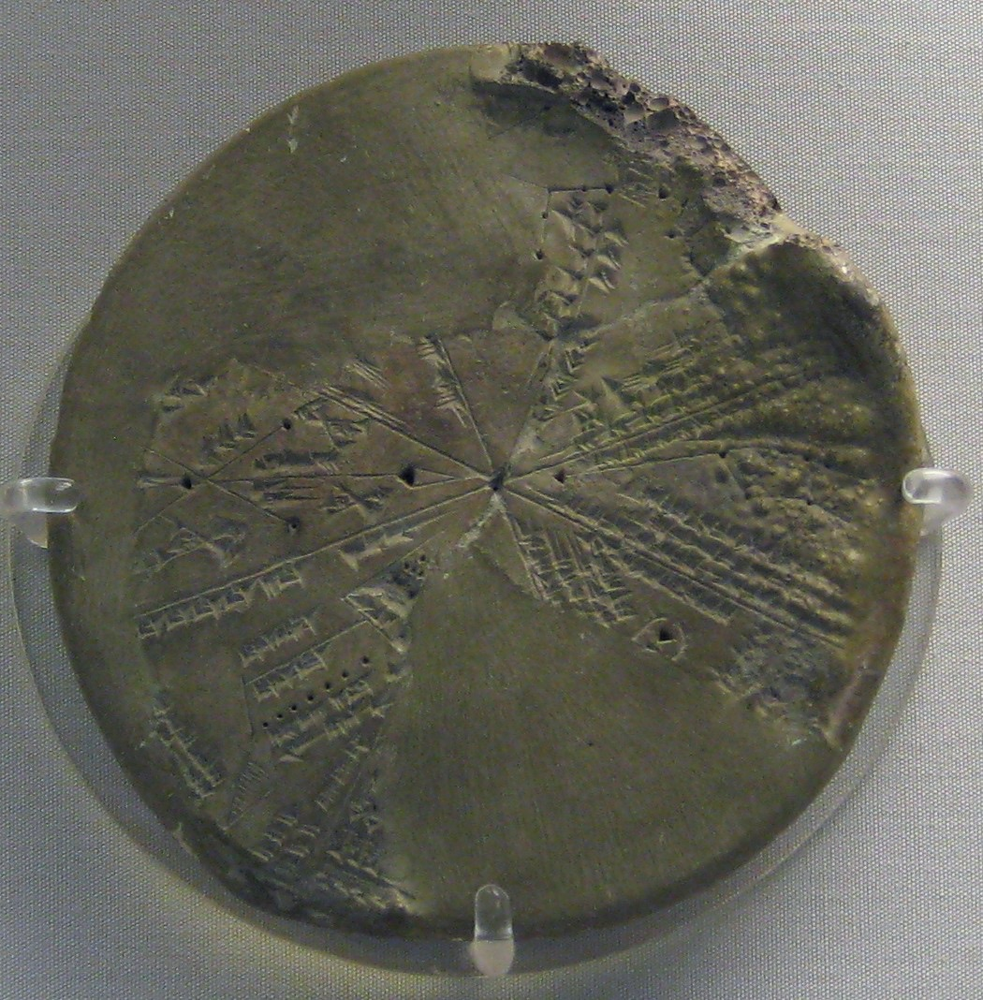
A Mesopotamian planisphere, a clay star map, from the library at Nineveh: the sky ordered into named divisions. British Museum. BabelStone (photograph of an object in the British Museum) · CC0
A psychologist reads Genesis
In the summer of 2017 the Canadian psychologist Jordan Peterson gave a series of fifteen public lectures in Toronto on the first book of the Bible, which were later transcribed. I want to be careful about what they are. They are not biblical scholarship; Peterson is not a scholar of Hebrew or of the ancient Near East, and specialists dispute much of his reading. They are a psychologist's attempt to treat old stories as distilled wisdom about how people live, in the tradition of Carl Jung, delivered live and at length, with digressions. I read them as I would read a gifted preacher, for what they open up, not for what they prove.
Peterson's key idea is that the stories of Genesis are not primitive science, failed attempts to explain how the world was made, but maps of how to act. A story, he argues, is a compressed record of behaviour that worked: the distilled memory of countless people who faced a situation and either flourished or failed. Before anyone could state a moral rule, people acted it out, and then told stories about the ones who acted well and badly, and the stories became the rule. That is close to what Harari says about fictions and what Durkheim says about rites, coming from a different direction. A people's oldest stories are its oldest technology for coordinating behaviour.
Chaos and order
The first chapter of Genesis describes God separating light from darkness, the waters above from the waters below, the land from the sea, and then filling each domain with living things, and finally making humans in God's own image and telling them to rule over the rest. Peterson reads this as a story about the act of creating order out of potential: speech that names and divides, attention that turns the unknown into the known. And he notices that the text insists, at every stage, that what is made is good.
You do not have to accept his theology to find this useful. Every human group must do something like it. It must divide its world into the known and the unknown, the safe and the dangerous, the clean and the unclean, the sacred and the ordinary. Durkheim thought those divisions were the very foundation of religion. Malinowski found the Trobrianders doing it with magic. A forager band does it every night when it draws the circle of the fire.
The flood
Many cultures also tell of a great flood that destroyed almost everyone. The Mesopotamian version, in the epic of Gilgamesh, is older than the Hebrew one, and the two are so similar in their details, a man warned by a god, a boat, the animals, the birds sent out to find land, that the later one surely borrowed from the earlier. Peterson's reading of Noah is moral: a world sinks into corruption, and one man, by keeping his house in order and walking with God, survives the collapse and carries life through. The flood is what happens when a society's order fails; the ark is what a person or a family can build against it.
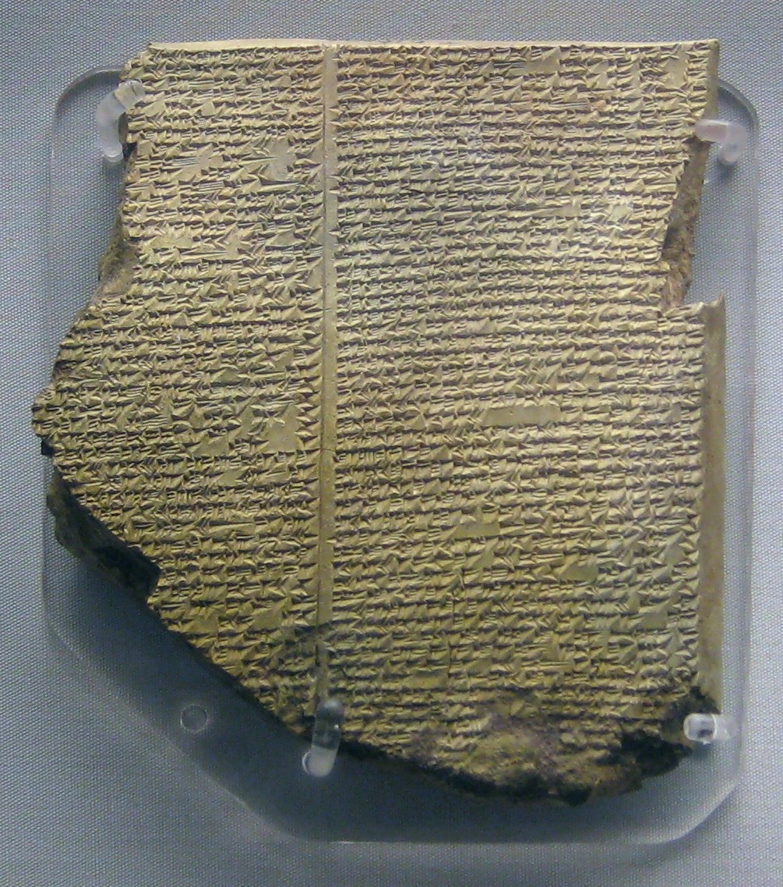
The Flood Tablet, the eleventh tablet of the Epic of Gilgamesh, from the library of the Assyrian king Ashurbanipal at Nineveh, seventh century BCE. Its flood story is older than the one in Genesis. British Museum. BabelStone (photograph of an object in the British Museum) · CC0
It is worth adding something Peterson does not dwell on. The people of Mesopotamia lived on a flat river plain where floods were real and sometimes devastating. A story told to explain a terrible flood, and to make sense of who survived, is exactly the kind of story Malinowski's magic and the model's myths are made of: a fear given a shape.
Babel
The story of the tower of Babel is short and strange. After the flood, all humans speak one language. They gather on a plain and decide to build a city and a tower whose top reaches the heavens, to make a name for themselves and not be scattered. God sees what they are doing, says that nothing they plan will now be impossible for them, confuses their language so they cannot understand one another, and scatters them across the earth.
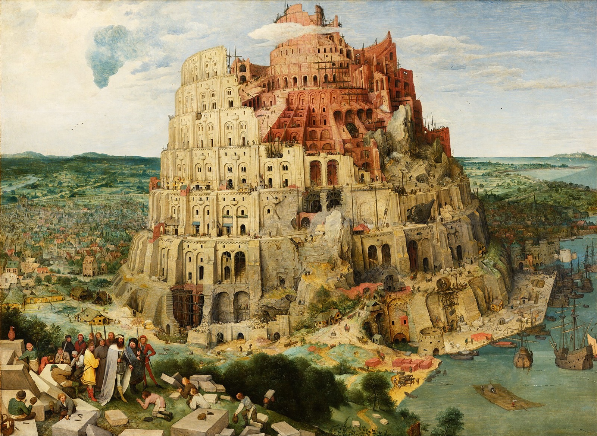
Pieter Bruegel the Elder, The Tower of Babel (1563), Kunsthistorisches Museum, Vienna. Pieter Bruegel the Elder (image: Google Arts & Culture) · Public domain
Peterson reads Babel as a warning against an over-centralised, prideful order, a system that thinks it can reach heaven by its own power, and that falls apart in confusion. I read it, after Nexus, as a story about information networks. A people with one language can coordinate anything. Break the language and the network falls into pieces, each speaking its own tongue, each with its own story. Every human expansion across the earth has been accompanied by exactly this: one people becoming many, one language splitting into dialects and then into languages that can no longer understand one another.
Abraham and the journey
The later chapters of Genesis turn from the whole of humanity to one family. God tells Abraham to leave his country, his kin and his father's house, and go to a land that will be shown to him. He goes. Much of the rest of Genesis follows his descendants, Isaac, Jacob and Joseph, through journeys, quarrels, famines, reconciliations and exile.
Peterson makes much of the call to leave. He reads it as a story about the necessity of venturing out of a comfortable life into the unknown, because staying where everything is provided leads to stagnation. Whatever the original authors meant, I cannot help hearing in it the opposite of EDEN, where everything is provided and no one can leave. Calhoun stressed that in nature, the losers in a crowded population leave to find somewhere else, and that it was the sealed pen that turned his mice's troubles into catastrophe. Abraham's story begins with a door.
Jacob and Joseph
The stories of Jacob and Joseph are among the most human in any ancient literature. Jacob cheats his brother Esau out of his birthright, flees, works for years for a wife, is cheated in turn, wrestles all night with a mysterious stranger and is renamed. His son Joseph, the favourite, is given a coat of many colours and sold into slavery by his jealous brothers; he rises in Egypt by interpreting dreams, predicts seven years of plenty and seven years of famine, and organises the storage of grain that saves Egypt and, in the end, his own family, who come begging for food without recognising him.
There is a lot of the history of humankind in that story. Envy between brothers. Slavery. A state that stores grain against famine, and an official who becomes powerful by managing the granary. A family reconciled by need. When I read it after Diamond's chapters on farming and states, I see it as a very old account of exactly what he describes: the stored surplus, the official who controls it, and the power that flows from feeding people in a bad year.
What myths are for
So what are these old stories for? Harari would say they are fictions that bind people into large groups. Durkheim would say they are a society's way of representing itself to itself. Malinowski would say they are charters, stories told to justify the way things are done now. Peterson would say they are maps of meaning, distilled from the experience of ancestors.
These are not exclusive answers. A story can do all four at once. What they share is the conviction that myth is not a mistake about the world, to be replaced by science, but something people need in order to live together and act in the face of the unknown. That is why, in LAGOON, a band that has stories responds to disaster differently from a band that does not. It has a way to make a catastrophe mean something, and to remember it.
What the model takes from this
Sources
Peterson, Jordan B. The Psychological Significance of the Biblical Stories (Genesis lectures, 2017), lectures I–XV.
Genesis, chapters 1–11 and 12–50, King James Version.
Harari, Yuval Noah. Nexus, chapter 2.
Malinowski, Bronisław. "Myth in Primitive Psychology" (1926) (cited for the "charter" idea; not on the shelf).
Chapter 8
The Gift That Travels
the Kula is a gift repaid after an interval of time
— Bronisław Malinowski, Argonauts of the Western Pacific (1922)
In 1915 a young Polish anthropologist found himself stranded. Bronisław Malinowski was a subject of the Austro-Hungarian Empire, working in Australian territory, when the First World War broke out. Technically he was an enemy alien. The Australian authorities, to their credit, let him continue his fieldwork rather than intern him, and so he spent the better part of two years living among the people of the Trobriand Islands, off the eastern tip of New Guinea. He pitched his tent in the villages, learned the language, and watched.
What he wrote, Argonauts of the Western Pacific, published in 1922, changed anthropology. Before him, most anthropologists collected stories from missionaries and colonial officers, or interviewed people briefly through interpreters. Malinowski insisted that you had to live with people, for a long time, and see their lives whole. He told his readers to record not just the rules people describe but how they actually behave, the small daily things he called the imponderabilia of actual life.
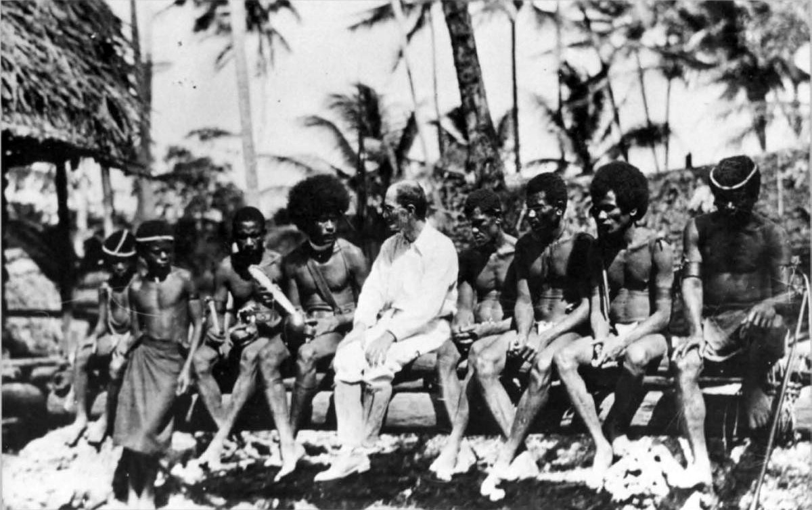
Malinowski with Trobriand Islanders, about 1918. He insisted that the anthropologist must live in the village, not visit it. Uncredited (likely Billy Hancock, a pearl trader in the Trobriands) · Public domain
The ring
The thing that most fascinated him was an institution called the kula. Across a ring of islands spanning hundreds of kilometres of open sea, men sailed in great canoes to visit trading partners on other islands. They carried two kinds of object. Long necklaces of red shell discs, called soulava, travelled clockwise around the ring. Armbands of white shell, called mwali, travelled anticlockwise. A man receiving a necklace from a partner would, after an interval, give that partner an armband of equal value, and pass the necklace on to another partner further round the ring.
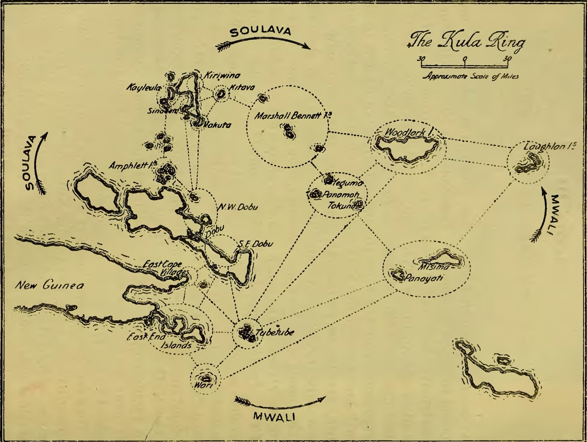
Malinowski's own map of the kula ring (1922): necklaces travel one way around the islands, armbands the other, for ever. Bronisław Malinowski, Argonauts of the Western Pacific (1922), map V · Public domain
The objects were not useful. You could wear them, on special occasions, but mostly you kept them for a while and passed them on. No one owned them permanently. Their value lay in their history: who had held them, and the names and stories that travelled with them. A famous necklace was like a famous racehorse or a family heirloom, known by name across the islands.
Malinowski was careful to distinguish this from trade. The Trobrianders also bartered, exchanging fish for yams or pots for food, and they had a separate word for it, gimwali. You could haggle in gimwali. You could not haggle in the kula. To do so would be shameful, like haggling over a wedding present. The kula partners, once linked, were linked for life, and partnerships passed between generations.
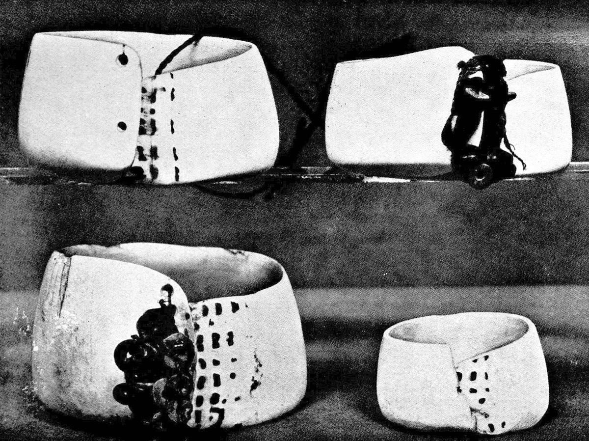
A mwali, a white shell armband of the kula, photographed by Malinowski in the Trobriands. Armbands travelled anticlockwise around the ring. Bronisław Malinowski, Argonauts of the Western Pacific (1922), plate XVI · Public domain
What the gift does
Why would people risk dangerous voyages, invest years in building canoes, and maintain complex networks of obligation, for objects with no practical use? Malinowski's answer, and the answer of the French sociologist Marcel Mauss, who built on his work in The Gift (1925), is that the objects were not the point. The relationships were.
The kula created a web of trust across a sea of islands whose peoples might otherwise have been strangers or enemies. A man arriving on another island had a partner there who was obliged to receive him, protect him and give to him. Along the routes of the kula, ordinary trade could flow safely. The ceremonial exchange was the frame inside which useful exchange became possible.
Mauss generalised the point. In many societies, he argued, a gift is never free. It creates an obligation to receive, and then an obligation to give back, and the cycle of gifts creates and maintains relationships. The modern idea of a pure market transaction, where two strangers swap goods and walk away owing nothing, is historically unusual. For most of human history, exchange has been tangled up with honour, kinship and alliance.
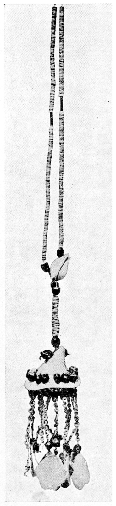
A soulava, a necklace of red shell discs, which travelled clockwise around the kula ring. Bronisław Malinowski, Argonauts of the Western Pacific (1922), plate XVIII · Public domain
Magic and work
Malinowski's other great lesson concerned magic. The Trobrianders used magic everywhere: for gardens, for canoes, for fishing, for love, for war. Earlier anthropologists had treated such practices as primitive science, failed attempts to control nature. Malinowski saw something else. The Trobrianders were excellent practical gardeners and sailors. They knew perfectly well that a canoe needed good wood and careful work. They used magic for the part of the job that work could not control: the storm that might come, the blight that might strike, the luck that no skill could guarantee. Fishing in the safe lagoon needed little magic; fishing on the dangerous open sea needed a great deal.
Magic, in his account, is a response to anxiety. It fills the gap between what we can do and what we need, and it gives people the confidence to act in the face of uncertainty. That idea is close to Durkheim's: ritual is not a mistake about the world but a way of living in it.
The man behind the tent
I should not leave Malinowski without saying something uncomfortable. In 1967, long after his death, his private diaries from the field were published. They revealed a man who was often lonely, irritable and contemptuous of the people he was studying, and who used ugly language about them. Anthropologists were shocked, and the diary started a long debate about the relationship between observer and observed. Can you understand a people you sometimes despise? Is every account of another society also a portrait of the person writing it?
I find the diary oddly reassuring. It shows that good observation does not require a saint. It requires discipline: the commitment to record what people do, not what you feel about them, and to let the evidence correct you. That is the discipline I try to apply to the two universes. I am allowed to feel things about the people in them. I am not allowed to let what I feel decide what I record.
What the model takes from this
Sources
Malinowski, Bronisław. Argonauts of the Western Pacific. Routledge Classics, 2014 (first published 1922).
Mauss, Marcel. The Gift (1925) (cited for context; not on the shelf).
Malinowski, Bronisław. A Diary in the Strict Sense of the Term. Harcourt, 1967 (cited for context; not on the shelf).
Chapter 9
The Luxury Trap
In the sweat of thy face shalt thou eat bread
— Genesis 3:19, King James Version
About eleven thousand years ago, in a band of hills and river valleys curving from the Levant through southeastern Turkey and down into Mesopotamia, some people began to plant the seeds of the wild grasses they had been gathering. They chose the plants with the biggest seeds and the ones whose seeds stayed on the stalk instead of scattering. Over generations, without anyone planning it, the plants changed: wild wheat and barley became domestic wheat and barley, plants that could no longer reseed themselves without human help. People began to tame animals too: sheep, goats, cattle, pigs. Archaeologists call the region the Fertile Crescent, and it is one of the places where the most important change in human history began.
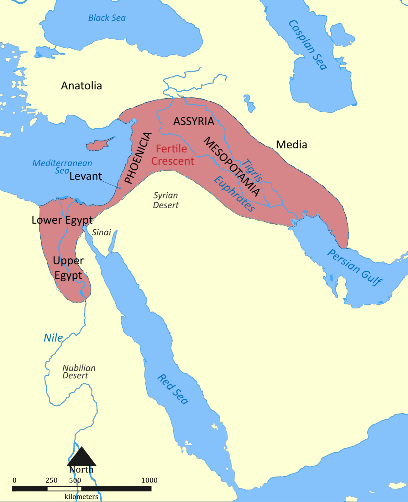
The Fertile Crescent, one of the first places where people domesticated plants and animals, about eleven thousand years ago. Nafsadh · CC BY-SA 4.0
Farming did not begin only there. It began independently in China, in New Guinea, in Mesoamerica, in the Andes, in the eastern United States, perhaps in parts of Africa, each with its own crops. Diamond lists the centres and their founding crops in Guns, Germs, and Steel, and the list is one of the most remarkable facts in history: several unconnected peoples, over a few thousand years, independently made the same transition. Something about the end of the last Ice Age, with its warmer and more stable climate, made farming possible, and once it was possible, it happened again and again.
History's biggest fraud
The traditional story of farming is a story of progress. Humans, the story goes, finally learned to control their food supply, settled down, built villages and then cities, and had the leisure for art, writing and science. Harari, in Sapiens, calls this the agricultural revolution and then turns it upside down. He calls it history's biggest fraud.
Einkorn, one of the first wheats domesticated in the Fertile Crescent, in a nineteenth-century botanical plate. Nikolaus Thomas Host, Icones et descriptiones graminum austriacorum (1801–09) · Public domain
His argument, as the project's notes summarise it, is this. Farming did increase the total amount of food, and so the number of people a piece of land could support. But for the average person it made life worse. Farmers worked longer and harder than foragers. Their bodies, built for walking and carrying and climbing, were bent over fields; their skeletons show the damage. Their diets narrowed to a few staple crops, so they were more often malnourished and more vulnerable to the failure of a single harvest. Living close together, and close to their animals, they caught new diseases. And settled life, with stored food, created property, inequality and elites who took the surplus. Harari's famous line is that we did not domesticate wheat; wheat domesticated us.
Why, then, did anyone accept the bargain? Harari's answer is that no one chose it. Each small step seemed sensible: a little more planting to feed a few more children, a little more storage to get through a bad winter. Each step increased the population, and once the population had grown, there was no way back. A village of a hundred farmers cannot return to foraging on land that once fed twenty foragers. He calls it the luxury trap: a series of improvements that each make sense, and that together lock people into a harder life.
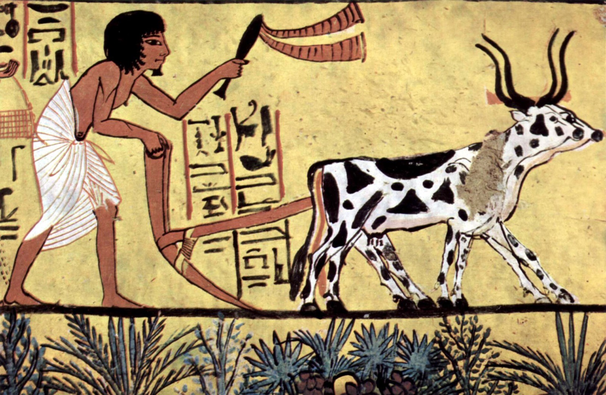
Sennedjem and his wife ploughing and harvesting in the fields of the afterlife, from their tomb at Deir el-Medina, Egypt, about 1250 BCE. Even paradise, for a farming people, was a field to be worked. Painter of the tomb of Sennedjem (reproduction: The Yorck Project) · Public domain
What Diamond adds
Diamond tells a similar story with a different emphasis. In his account, farming was not a single decision but a slow shift in the balance of costs and benefits. As wild game declined and domestic crops improved, the time spent farming became more productive compared with the time spent hunting, and people drifted from one to the other. He agrees that early farmers were often less healthy than the foragers before them. But he is more interested in the consequences at the level of societies than of individuals.
Food that can be stored, he argues, changes everything. A society with a granary can feed people who do not produce food: chiefs, priests, soldiers, craftsmen, scribes. Those specialists make tools, weapons and laws, and over time a farming society develops a technology and an organisation that no band of foragers could match. Farming peoples also have shorter birth spacing, because a settled mother with soft cereal foods for weaning can have a child every two years instead of every four. They multiply. And where farming peoples met foragers, the farmers usually won, not because they were braver or cleverer, but because there were more of them, and they had the specialists and, as we will see in the next chapter, the germs.
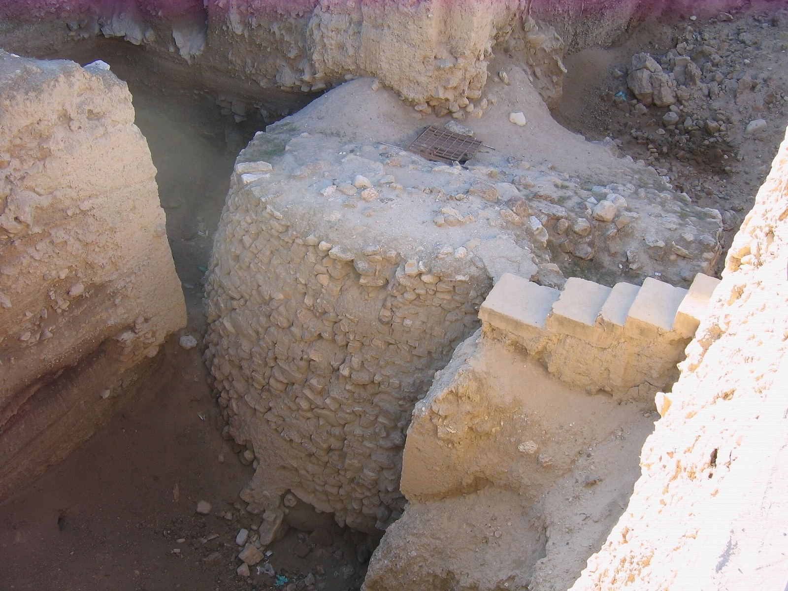
The stone tower of Jericho, built about ten thousand years ago by some of the first people to settle and farm: a monument raised by a village, long before kings. Reinhard Dietrich · Public domain
Where scholarship has moved
Since Harari and Diamond wrote, archaeologists have complicated the story. The transition to farming in the Fertile Crescent was slow, taking thousands of years, and in many places people mixed foraging and farming, or went back and forth between them. Some early settlements were large and complex before farming. And David Graeber and David Wengrow, in The Dawn of Everything (2021), argue that early farming societies made many different political choices, some egalitarian, some not, and that inequality was not the automatic result of agriculture. The idea of a single trap that closed on humanity is too neat.
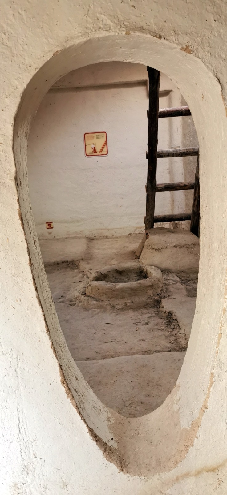
Çatalhöyük in central Anatolia, about 7400 BCE: thousands of people living in mudbrick houses packed so closely that they walked across the rooftops instead of streets. Murat Özsoy · CC BY-SA 4.0
But I think the core of Harari's and Diamond's point survives. Farming did increase population, did increase the workload and the disease burden of the average person for a long time, and did make possible the stored surplus that fed specialists and elites. And it was very hard to undo. Whether it was a trap or a bargain depends on whether you ask the individual or the species, and the two answers do not have to agree.
The door that only opens one way
There is one more thing to say about farming, and it is the thing that matters most for LAGOON. A forager band that has a bad year moves on, or tightens its belt, or splits. A farming village that has a bad year has nowhere to go: it has invested in its fields, its houses, its stores. Its population is too large to feed by foraging. Farming makes people more numerous and more fragile at the same time. When a drought or a blight strikes a farming people, the famine can be far worse than anything foragers knew.
That is why storage, and the skills of preserving food, mattered so much. And it is why the granary, more than the plough, may be the real symbol of the agricultural world: a building full of food that someone must guard, count and distribute, and that someone else will want to take.
What the model takes from this
Sources
Harari, Yuval Noah. Sapiens (shelf copy unreadable; "history's biggest fraud" and "luxury trap" via the project's research notes).
Diamond, Jared. Guns, Germs, and Steel, chapters 4–10.
Graeber, David, and David Wengrow. The Dawn of Everything: A New History of Humanity. Farrar, Straus and Giroux, 2021 (cited for context; not on the shelf).
Chapter 10
Germs, Steel and the Shape of Continents
In July 1972, on a beach in New Guinea, a local politician named Yali asked Jared Diamond a question. Why, he wanted to know, did white people have so much cargo, so many goods, and New Guineans so little? Yali was a sharp and thoughtful man, and his question was not naive. He was asking why history had turned out so unequally. Diamond spent the next quarter of a century trying to answer it, and the result was Guns, Germs, and Steel.
Cajamarca
The book's most vivid chapter describes a single afternoon. On 16 November 1532, at the town of Cajamarca in the highlands of Peru, the Inca emperor Atahuallpa, ruler of the largest and richest state in the Americas, came to meet a group of Spanish adventurers led by Francisco Pizarro. Atahuallpa had an army of tens of thousands of soldiers nearby. Pizarro had fewer than two hundred men. Within a few hours, the Spanish had captured the emperor and killed thousands of his attendants without losing a single man. Atahuallpa offered a room full of gold for his release; the Spanish took the gold and killed him anyway.
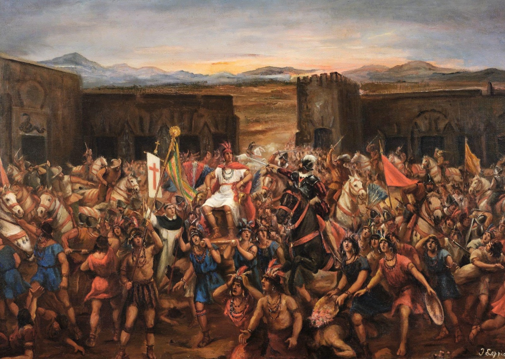
The Capture of Atahualpa at Cajamarca, painted by the Peruvian artist Juan Lepiani in the 1920s, almost four centuries after the event. Juan Lepiani · Public domain
How was this possible? Diamond lists the immediate reasons. The Spanish had steel swords, steel armour and guns; the Inca had stone and bronze weapons and cotton armour. The Spanish had horses, which terrified and outran Inca soldiers. The Spanish had writing, which let them learn from earlier conquests, such as Cortés's in Mexico; the Inca had none of that knowledge. And, crucially, the Inca empire had already been devastated by smallpox, which had travelled ahead of the Spanish through the Americas and killed the previous emperor and many of his court, plunging the empire into a civil war that Atahuallpa had only just won.
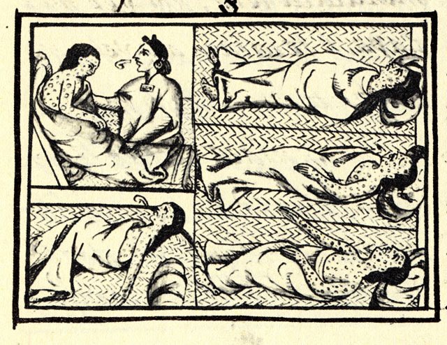
Nahua victims of smallpox, drawn for Book XII of the Florentine Codex (about 1577), the Aztec account of the conquest compiled under Bernardino de Sahagún. The epidemic of 1520 killed a large share of the population of the Aztec capital. Nahua artists for Bernardino de Sahagún, Florentine Codex, Book XII, folio 54 · Public domain
The deeper causes
Those are what Diamond calls the proximate causes. His real interest is in the ultimate causes: why the Spanish had steel, horses, writing and immunity to smallpox, and the Inca did not. His answer is not about people. He is emphatic that there is no evidence that Europeans were cleverer or more energetic than anyone else. His answer is about geography and biology.
First, plants and animals. Some parts of the world happened to have many wild plants and animals that were easy to domesticate; others had few. The Fertile Crescent had wild wheat, barley, peas and lentils, all easy to grow and store, and wild sheep, goats, cattle and pigs. Of about a hundred and fifty large wild plant-eating mammals on earth, Diamond counts only fourteen that were ever domesticated, and thirteen of those were in Eurasia. The Americas had only the llama and alpaca. To be domesticated, an animal had to pass every one of a list of tests: it had to eat what people could provide, grow fast, breed in captivity, be reasonably docile, not panic, and live in herds with a hierarchy that humans could take over. Failing any one test ruled it out. Diamond calls this the Anna Karenina principle, after the opening line of Tolstoy's novel: happy families are all alike, and every unhappy family is unhappy in its own way.
Second, the shape of continents. Eurasia is wide from east to west, so crops and animals and ideas could spread along lines of similar latitude, with similar seasons and day lengths. The Americas and Africa run mostly north to south, so a crop domesticated in Mexico had to cross deserts and tropics and different day lengths to reach the Andes. Diffusion was slower. Eurasia's societies could borrow from one another across thousands of kilometres. Many American and African societies had to invent things independently, or go without.
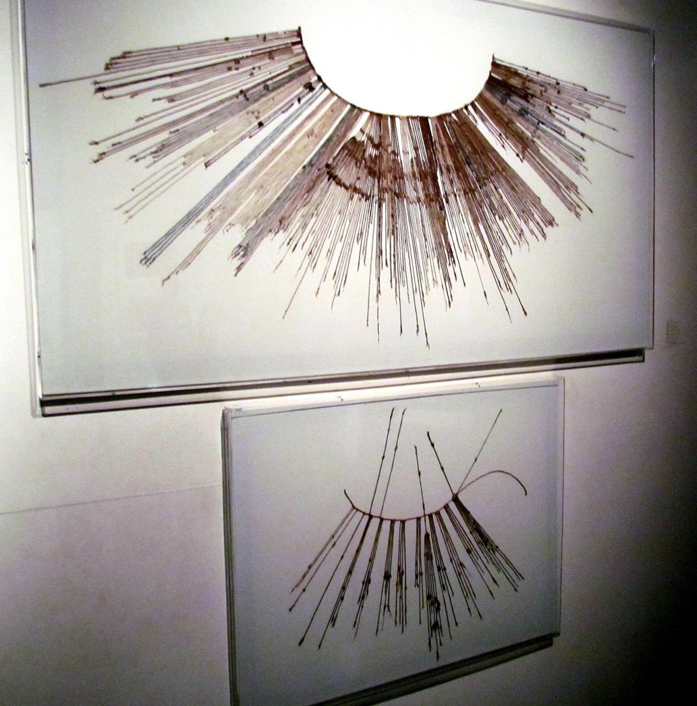
An Inca khipu, a record kept in knotted cords. The Inca ran an empire without writing as Eurasia knew it; Diamond counts this among the reasons Atahuallpa knew nothing of Spain. Larco Museum, Lima. bobistraveling · CC BY 2.0
Third, germs. The great epidemic diseases of history, smallpox, measles, influenza, tuberculosis, came from domestic animals. They jumped to humans who lived in close contact with herds, and they needed large, dense populations to survive. Eurasians, after thousands of years of living with animals and in cities, had built up immunity. Peoples of the Americas, with few domestic animals and no previous exposure, had none. When the diseases arrived, they killed, by many estimates, the great majority of the native population of the Americas within a century or two. More Native Americans died of Eurasian germs than of Eurasian swords.
Smallpox virus particles under the electron microscope. The disease, which came to humans from domestic animals, killed more people in the Americas than any army. CDC / Dr. Fred Murphy; Sylvia Whitfield · Public domain
From bands to states
The last part of Diamond's chain is political. Food production allowed denser populations; denser populations needed new kinds of organisation. He describes a ladder of societies. A band is a few dozen people, mostly kin, with no formal leader. A tribe is a few hundred, in several kin groups, still knowing one another by face, with a big-man who leads by persuasion. A chiefdom is thousands of people, with a hereditary chief who collects tribute and redistributes it, and the first officials and priests. A state is tens of thousands or more, with bureaucracies, laws, armies and cities. Each step up the ladder, he argues, is driven by the need to manage conflict between strangers: once a society is too big for everyone to know everyone, someone must have the power to settle disputes, or it will fly apart. The chief keeps the peace and takes his cut. Diamond, a little drily, calls this a kleptocracy, and notes that it is tolerated as long as it keeps order, redistributes some wealth, and has an ideology, usually a religion, to justify it.
Diamond's critics
Diamond won the Pulitzer Prize for this book, and it is one of the most influential works of popular history ever written. It has also been heavily criticised. Historians and anthropologists accuse him of environmental determinism, of leaving too little room for human choices, institutions, accidents and ideas. Daron Acemoğlu and James Robinson, in Why Nations Fail, argue that the reasons some countries are rich and others poor today have far more to do with political and economic institutions than with ancient geography. Others point out that his framework explains why Eurasia rather than the Americas came to dominate, but not why Europe rather than China, which had every geographic advantage. Some critics have gone further and called the book a sophisticated excuse for European conquest, a way of saying that it was no one's fault.
I do not think that last charge is fair. Diamond's whole purpose is to refute the racist answer to Yali's question, and he does. But the first criticism stands. Geography loads the dice. It does not throw them. The Spanish at Cajamarca still had to choose to kill.
What the model takes from this
Sources
Diamond, Jared. Guns, Germs, and Steel, chapters 3, 9–11, 14, and the Epilogue.
Acemoğlu, Daron, and James A. Robinson. Why Nations Fail. Crown, 2012 (cited for the institutional critique; not on the shelf).
Sahagún, Bernardino de, et al. General History of the Things of New Spain (the Florentine Codex), Book XII, about 1577.
Chapter 11
Things That Remember
Look on my works, ye Mighty, and despair!
— Percy Bysshe Shelley, Ozymandias (1818)
In 2010, Neil MacGregor, then the director of the British Museum, told the history of the world on BBC radio through one hundred objects from the museum's collection, one each weekday for twenty weeks, each in fifteen minutes. The series became a book, A History of the World in 100 Objects, and it is one of the most beautiful ways I know of thinking about the past. The copy on my shelf, I am sorry to say, turned out to be an empty file, so in this chapter I am not summarising MacGregor's text. I am borrowing his method: picking up a thing and asking what it remembers.
Things remember differently from people. People remember what they want to; things remember what happened to them. A text tells you what its writer wanted you to believe. An object tells you how it was made, used, broken, mended and buried, and often it tells you things its makers never thought to say.
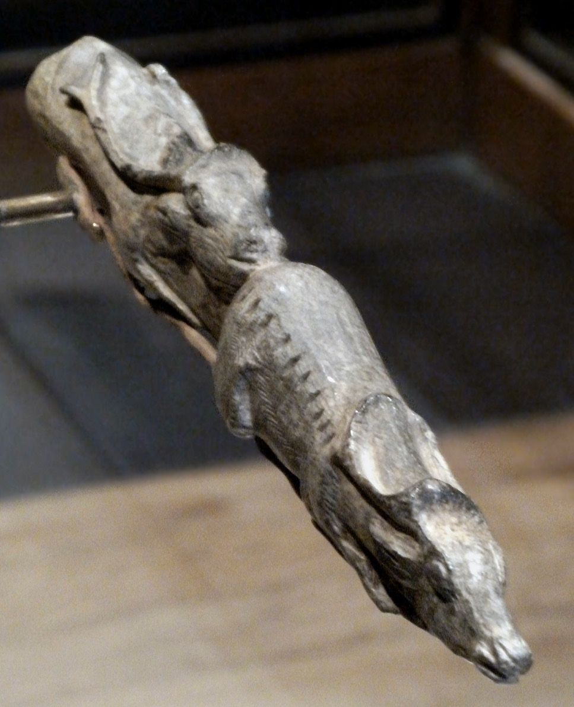
The Swimming Reindeer, carved from the tip of a mammoth tusk about thirteen thousand years ago in what is now France. The carver had watched reindeer cross a river in autumn. Johnbod · CC BY-SA 3.0
The reindeer
Begin with the Swimming Reindeer. About thirteen thousand years ago, at the end of the last Ice Age, someone in what is now southern France took the tip of a mammoth tusk and carved two reindeer swimming, a male behind a female, their heads raised and their antlers laid back. The detail is precise enough that zoologists can tell the season: autumn, when the animals migrate and cross rivers, and when they were fattest for hunting. The carver knew these animals intimately, because the band's life depended on them. The object is food, calendar, art and perhaps prayer at once.
It also tells us something about time. The carver's world was ending. The ice was retreating, the reindeer were moving north, and within a few thousand years the forests would cover the plains where they had grazed. The people who carved this could not have known that their way of life was nearly over. Neither, probably, can we.
The standard
Now jump forward ten thousand years, to the city of Ur in southern Mesopotamia, around 2500 BCE. In the 1920s the archaeologist Leonard Woolley excavated a royal cemetery there and found a wooden box, its wood long rotted away, decorated on both long sides with mosaics of shell, red limestone and blue lapis lazuli. No one knows what it was for. Woolley guessed it was carried on a pole, and called it the Standard of Ur.
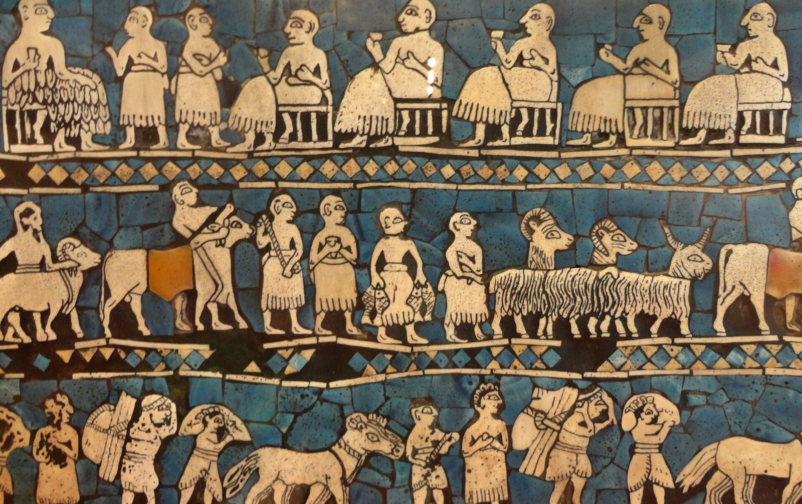
The "Peace" side of the Standard of Ur, about 2500 BCE: produce and animals are brought up the rows to a king feasting at the top. Juan Carlos Fonseca Mata · CC BY-SA 4.0
One side shows war: chariots trampling enemies, soldiers leading naked, bound prisoners to a king who stands taller than everyone else. The other side shows peace: rows of men bringing animals and goods, and at the top a banquet, the king seated with his companions, drinking, while a musician plays a lyre. Read together, the two sides are a complete theory of the state. The king wins wars and so takes goods; the goods are brought to him; he feasts. Everyone has a place in the rows, and the rows lead to the top.
And the materials tell another story. Lapis lazuli does not come from Mesopotamia. It comes from the mountains of what is now Afghanistan, more than two thousand kilometres away. The red limestone came from India, perhaps. Ur was already part of a long-distance trade network that reached across a continent. The object is a picture of a kingdom and also a map of its connections.
The stone that spoke three ways
The most visited object in the British Museum is a broken slab of dark stone. In 196 BCE, priests in Egypt issued a decree honouring the young king Ptolemy V, and copies were carved on stone slabs set up in temples. The decree was written three times: in Egyptian hieroglyphs, the sacred script; in Demotic, the everyday Egyptian script; and in Greek, the language of the ruling dynasty, which had come from Alexander the Great's conquests.
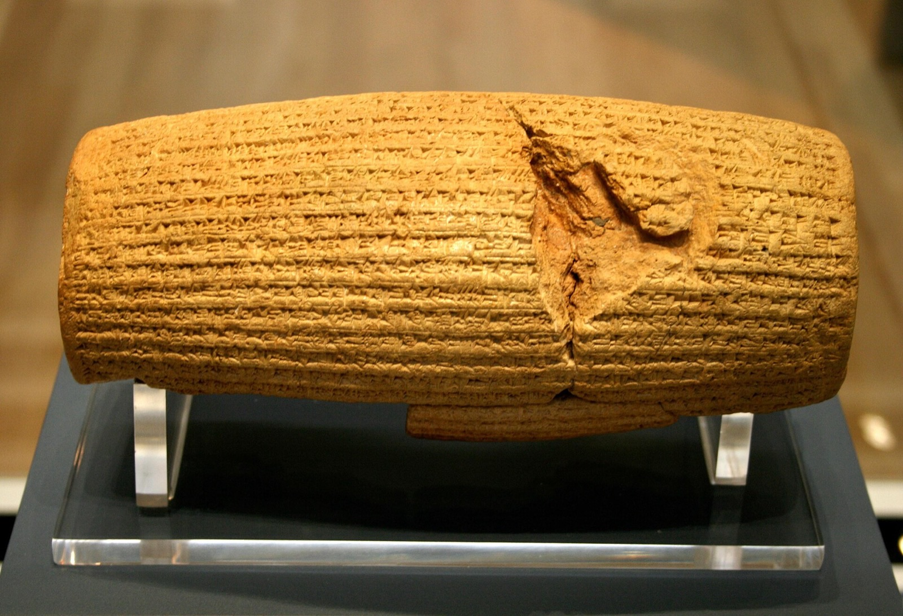
The Cyrus Cylinder, 539 BCE, in which the Persian king Cyrus announced his conquest of Babylon and his restoration of its temples and peoples. It has been called the first charter of human rights, which says more about our times than about his. British Museum. Mike Peel (www.mikepeel.net), modified by مانفی · CC BY-SA 4.0
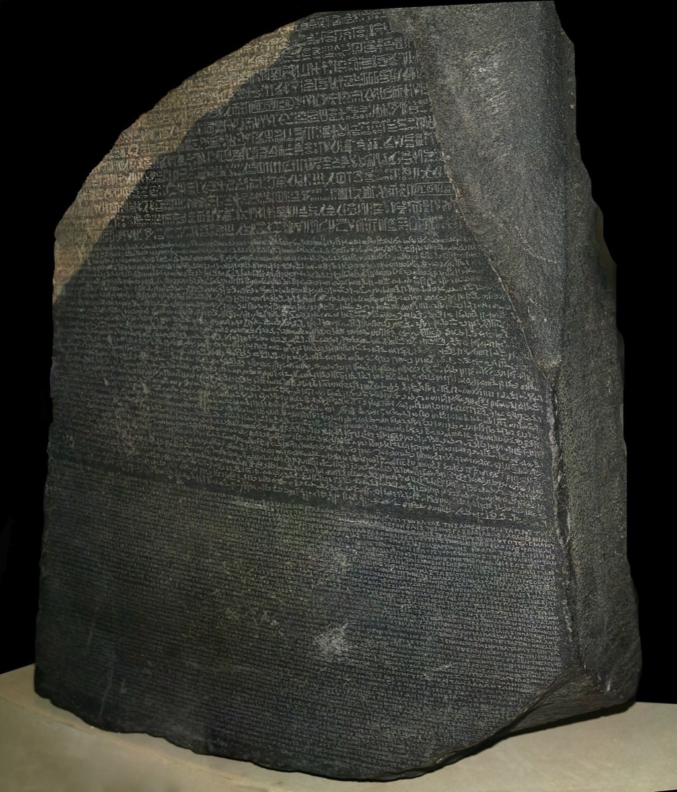
The Rosetta Stone, 196 BCE, carved with the same decree in hieroglyphs, Demotic and Greek. It was found by French soldiers in 1799 and is now in the British Museum. Hans Hillewaert · CC BY-SA 4.0
In 1799, French soldiers rebuilding a fort near the town of Rashid, which Europeans called Rosetta, found one of these slabs built into a wall. When the British defeated the French in Egypt, the stone was handed over as a spoil of war, and it has been in London since 1802. Because scholars could read the Greek, they could use it as a key to the hieroglyphs, which no one had been able to read for fourteen centuries. Jean-François Champollion announced his decipherment in 1822. A whole civilisation began to speak again.
The Rosetta Stone remembers many things. It remembers a multilingual empire, where the rulers spoke Greek and the people spoke Egyptian. It remembers the uses of writing: not literature but a political announcement, a piece of propaganda carved in stone. And it remembers modern empires too: the French invasion of Egypt, the British victory, the shipping of the past to a European capital. Egypt has asked for it back. Any honest history of objects has to include the history of how they came to be where they are.
What the objects say together
Put the handaxe from our first chapter beside the reindeer, the standard and the stone. The handaxe was made the same way for a million years. The reindeer was made by people who lived in small bands and knew animals as neighbours. The standard was made for a king, by craftsmen who never farmed, from materials traded across a continent. The stone was made by a state to announce its legitimacy in three scripts to three audiences. The objects trace the arc of this book: from the band to the state, from the intimate to the administrative, from a world where everyone knew everyone to a world where a decree had to be carved in stone because most of the people who read it would never meet the king.
MacGregor's method has a deeper lesson, which I take as a rule for the two universes. History is written by those who write. But everyone leaves things. If you want to know how ordinary people lived, look at what they left behind. That is why the simulation keeps a record of every death, every birth and every disaster, and why, when a world dies, it writes a postmortem: so the things that happened remain, even after the people who could have told us are gone.
What the model takes from this
Sources
MacGregor, Neil. A History of the World in 100 Objects. Allen Lane, 2010 (the shelf copy was unreadable; this chapter borrows the method, not the text).
British Museum collection records for the Swimming Reindeer, the Standard of Ur and the Rosetta Stone.
Diamond, Jared. Guns, Germs, and Steel, chapter 12.
Chapter 12
The Leviathan and the Long Decline of Violence
the life of man, solitary, poore, nasty, brutish, and short
— Thomas Hobbes, Leviathan (1651)
In 1651, after a decade of civil wars that killed a larger share of the population of the British Isles than the First World War would, the philosopher Thomas Hobbes published a book with one of the most famous title pages ever printed. It shows a giant crowned figure rising over a peaceful landscape of fields, villages and a walled town. He holds a sword in one hand and a bishop's crozier in the other. Look closely and you see that his body is made of people, hundreds of tiny figures, all facing towards his head. The book was called Leviathan, after the sea monster in the Book of Job, and its argument was simple and terrifying.
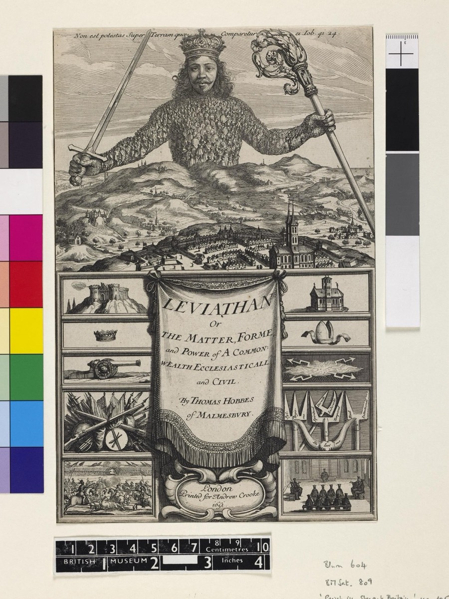
The frontispiece of Hobbes's Leviathan (1651), designed by Abraham Bosse. The sovereign's body is made of the people who have agreed to obey him. Abraham Bosse (scan of the British Museum impression) · Public domain
Without a power to keep them all in awe, Hobbes wrote, people live in a condition of war, every one against every one. Not because people are wicked, but because in a world without a referee each has reason to fear the others, and the best defence is to strike first. Competition, distrust and the desire for glory drive people to violence, and the result is the condition he described in his most quoted phrase. The only escape is for everyone to hand over their right to use force to a single sovereign, a Leviathan, who will punish anyone who breaks the peace. Nigel Warburton, in his Little History of Philosophy, calls this the bleakest and most honest bargain in political thought: freedom traded for safety, because without safety there is no freedom worth having.
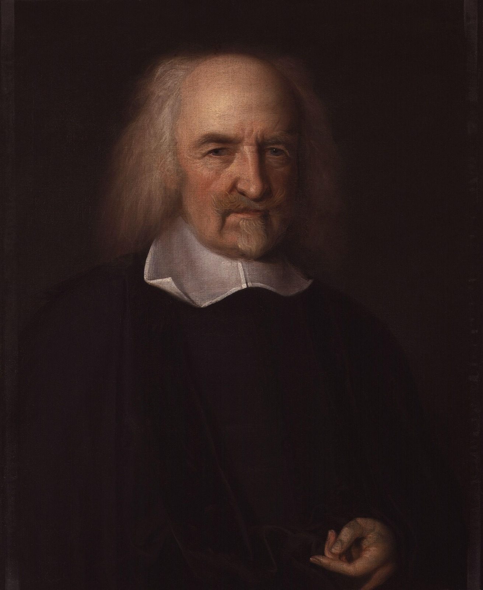
Thomas Hobbes (1588–1679), painted by John Michael Wright about 1669. John Michael Wright · Public domain
Pinker's great claim
Three and a half centuries later, Steven Pinker took Hobbes's argument and tested it against all the data he could find. The Better Angels of Our Nature, published in 2011, is a long book, more than eight hundred pages, and its claim is easy to state: violence of almost every kind has declined over the course of human history, and we may be living in the most peaceful era of our species' existence.
He organises the decline into six trends. The first, the Pacification Process, is the transition from the anarchy of hunting, gathering and horticultural societies to the first states, which, he argues, cut the rate of violent death roughly fivefold. The second, the Civilizing Process, borrowed from the sociologist Norbert Elias, is the decline of homicide in Europe between the late Middle Ages and the twentieth century, by a factor of ten to fifty, as kingdoms consolidated, courts replaced feuds, and commerce rewarded self-control. The third, the Humanitarian Revolution of the seventeenth and eighteenth centuries, abolished judicial torture, cruel punishments, witch-burning and slavery in much of the world. The fourth, the Long Peace, is the absence of war between the great powers since 1945. The fifth, the New Peace, is the decline of wars of all kinds since the end of the Cold War. The sixth, the Rights Revolutions, is the extension of protection against violence to minorities, women, children, homosexuals and animals.
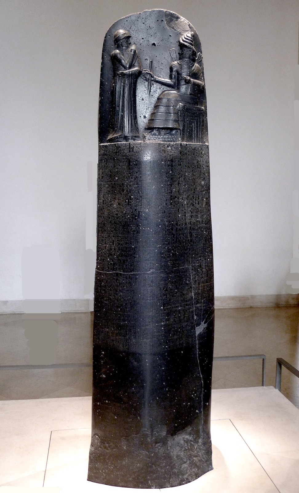
The law code of Hammurabi of Babylon, about 1754 BCE: a king announcing, in stone, that crimes will be punished by the state and not by the victim's family. Louvre, Paris. Mbzt · CC BY 3.0
The demons and the angels
Why did violence decline? Pinker's answer depends on a picture of human nature. We are not, he argues, born with a reservoir of aggression that must be released. Nor are we blank slates, made violent only by bad societies. We have several distinct psychological systems that can lead to violence, which he calls our inner demons: predation, the use of violence as a means to an end; dominance, the drive for status; revenge, the urge to pay back harm; sadism, pleasure in another's suffering; and ideology, the belief that a utopian end justifies any means. And we have systems that can restrain violence, which he calls our better angels: empathy, self-control, a moral sense, and reason.
Revenge gets particular attention. Pinker describes what psychologists call the moralization gap: when people are harmed, they remember the harm as large, unprovoked and lasting; when they cause harm, they remember it as small, justified and in the past. Each side of a feud therefore counts the score in its own favour, and every act of revenge looks to the other side like a fresh outrage. Revenge is not irrational. It is a deterrent, and in a world without courts, a reputation for paying back harm is protection. But it escalates. The great achievement of the state is to take revenge out of private hands.
Historical forces, in his account, tipped the balance between demons and angels. The Leviathan state, with a monopoly on force, removed the need to strike first. Commerce, which he calls gentle commerce, made other people more valuable alive than dead. Women's growing influence, the spread of literacy and the cosmopolitan exposure to other people's lives, and the steady application of reason to moral questions, all pushed the same way.
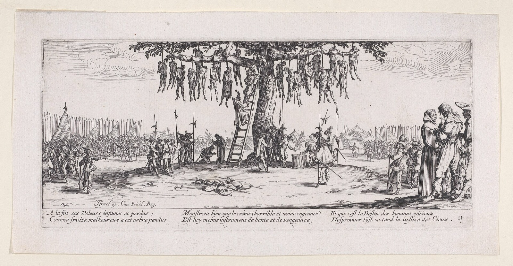
Jacques Callot, The Hanging, from The Miseries of War (1633): soldiers executed for plunder during the Thirty Years War. The cruelty of early modern Europe is the starting point of Pinker's Humanitarian Revolution. Jacques Callot (The Metropolitan Museum of Art) · CC0
The critics
Better Angels is one of the most debated books of the century, and you should know the main objections.
The first concerns the ancient data. As I mentioned in an earlier chapter, anthropologists such as Douglas Fry and Brian Ferguson argue that Pinker's samples of forager violence are unrepresentative, and that simple mobile bands were far less violent than his averages suggest. If they are right, the Pacification Process looks less dramatic, and war looks more like an invention of settled life than a constant of human nature.
The second concerns modern war. The statistician Nassim Taleb and the researcher Pasquale Cirillo argued that wars follow a fat-tailed distribution: most are small, but a few are catastrophically large, and seventy years without a great-power war is not long enough to tell whether the underlying risk has fallen. A long peace can end in a single afternoon, and a world with nuclear weapons has a very fat tail indeed.
The third concerns the twentieth century. Pinker argues that, measured as a share of the world's population, even the two world wars were not unusually lethal by historical standards. Many readers find this a strange comfort, and some find it a way of making the industrial killing of millions look like a statistical blip.
I think Pinker is largely right about homicide in Europe, largely right about the abolition of cruel punishments and slavery, and right that a third party with standing changes how people behave. I think the critics are right that the ancient numbers are uncertain and that the future of war cannot be read off its past. The Leviathan is a real solution to a real problem. It is not a guarantee.
What the Leviathan needs
There is a detail in Pinker's account that I have tried to carry into the model. A state reduces violence not simply because it has power but because it has legitimacy. A third party that people accept as fair, a chief or a court or a council of elders, can settle disputes without anyone losing face. A third party that people see as a tyrant or a partisan just becomes another side. When legitimacy collapses, violence comes back. Pinker gives examples from New Guinea, where the withdrawal of colonial administration was followed by a return of tribal warfare.
So a Leviathan is not just a sword. It is a sword that people agree should be held, and by whom.
What the model takes from this
Sources
Pinker, Steven. The Better Angels of Our Nature. Viking, 2011 (Puffin edition 2022), chapters 1–3, 8–10.
Hobbes, Thomas. Leviathan, 1651, chapter 13.
Warburton, Nigel. A Little History of Philosophy. Yale, 2011, chapter 10.
Cirillo, Pasquale, and Nassim Nicholas Taleb. "On the Statistical Properties and Tail Risk of Violent Conflicts." Physica A 452 (2016) (cited for the critique; not on the shelf).
Elias, Norbert. The Civilizing Process (1939) (cited via Pinker).
Chapter 13
The Mind We Are Born With
On 13 September 1848, a railway foreman named Phineas Gage was preparing to blast rock near the town of Cavendish, Vermont. He was tamping explosive powder into a hole with an iron bar more than a metre long when a spark set it off. The bar shot up through his left cheek, behind his left eye, through the front of his brain, and out of the top of his skull, landing some distance away. Gage was knocked over, then sat up and talked. He was taken to a doctor by cart, and survived.
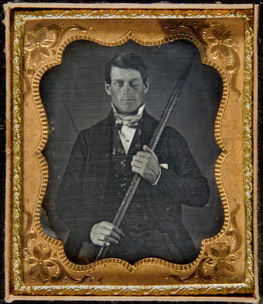
Phineas Gage, after his accident, holding the tamping iron that passed through his brain. Daguerreotype of the 1850s, rediscovered in 2009. Jack and Beverly Wilgus (photograph of the daguerreotype in their collection) · CC BY-SA 3.0
But according to his doctor, he was no longer the same man. The efficient, well-balanced foreman became impatient, profane, impulsive and unable to stick to plans. His friends said he was no longer Gage. The story has been exaggerated in the retelling, and the historian Malcolm Macmillan has shown that Gage later held down a job driving coaches in Chile, which suggests a good deal of recovery. But it remains the founding case of a fact that every modern psychology book, including the two on my shelf, takes for granted: the mind is what the brain does, and particular parts of the brain do particular things. The front of the brain, the prefrontal cortex, is where we plan, wait, restrain ourselves and weigh the future against the present.
What Bloom tells us
Paul Bloom's Psych, published in 2023, is a tour of the whole of psychology, written as a kind of introductory course for adults, and it begins exactly here, with the idea that brain makes thought. From there it moves through consciousness, Freud, the behaviourists, Piaget, language, perception, reason, emotion, social life, personality, mental illness and happiness. What I took from it for this book are four ideas.
The first is that we are not blank slates. Babies come into the world already expecting objects to be solid and to persist, already sensitive to faces and voices, already, in Bloom's account of the research, inclined to prefer characters who help over characters who hinder. Development is real, and culture shapes it enormously, but it shapes a mind that already has a structure.
The second is that we differ from one another, and that those differences are partly inherited. Twin and adoption studies, which Bloom and Pinker both review, find that most psychological traits, from intelligence to personality to the risk of mental illness, are substantially heritable, typically somewhere between forty and fifty percent. Surprisingly, the shared environment of the family, the things siblings have in common like their parents' style and their home, often explains little of how adults turn out. The rest is unique experience and chance.
The third is that the mind is a collection of systems that do not always agree. We have quick, emotional, intuitive systems and slower, deliberate ones; we want things now and we want things later. Self-control, the ability to choose the later reward, is one of the best predictors of how people's lives go. And it matures late, along with the prefrontal cortex, which is not fully developed until the early twenties. That is one reason adolescence is a time of risk.
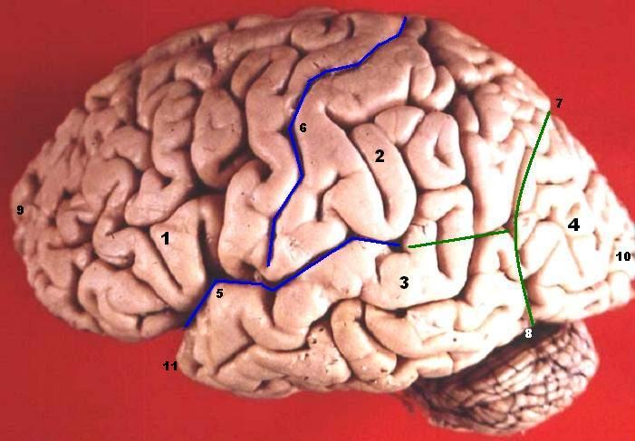
The human brain from the side. The frontal lobe, at the left, holds the prefrontal cortex, where planning and restraint mature last. John A. Beal, Louisiana State University Health Sciences Center · CC BY 2.5
The fourth is a matter of honesty. Bloom includes a chapter on what he calls a crisis: the discovery, in the 2010s, that many famous findings in psychology could not be replicated when other scientists tried. He is candid that some of the field's most celebrated experiments were weaker than they looked. This is not a reason to give up on psychology. It is a reason to hold its results with care, which is the attitude I have tried to take throughout this book.
The Blank Slate
Steven Pinker's The Blank Slate, published in 2002, is a polemic rather than a survey. Its target is three doctrines that he argues dominated twentieth-century intellectual life. The blank slate is the idea that the mind has no innate structure and is written entirely by experience. The noble savage is the idea that people are naturally good and corrupted by society. The ghost in the machine is the idea that there is a soul or self separate from the brain, which makes free choices that biology cannot explain.
Pinker argues that all three are false, and that people cling to them out of fear: fear that if differences are innate, inequality will be justified; that if human nature is flawed, social improvement is impossible; that if behaviour is caused by the brain, no one is responsible; and that if life has no transcendent purpose, it has no meaning. He goes through each fear and argues it is mistaken. Innate differences between individuals do not justify discrimination against groups. A human nature with selfish and aggressive drives also has empathy, self-control and reason, which can be strengthened. Responsibility is a social practice that makes sense whatever its biological basis. And meaning is something people make.
The book was controversial, and parts of it remain so. Critics argue that Pinker overstates the evidence from twin studies, whose assumptions are disputed, and that heritability figures depend heavily on the environment in which they are measured; in poor and chaotic environments, heritability of traits like intelligence can be much lower, because the environment holds people back. Average differences between the sexes, which Pinker discusses at length, are real but modest and overlapping, and the variation within each sex is far greater than the gap between them. I find his central point persuasive: a society designed for the people we wish we were, rather than the people we are, will fail. But I hold his specific numbers loosely.
A thinking animal
Warburton's Little History of Philosophy reminds me that these questions are old. Descartes, sitting by his stove in the winter of 1619, decided he could doubt everything except that he was thinking, and concluded that the mind was a separate substance from the body; that is the ghost in the machine Pinker wants to exorcise. Locke thought the mind began as an empty cabinet, waiting to be furnished; that is the blank slate. Hume thought reason was the slave of the passions. Each of them was half right, and modern psychology is, in a sense, the attempt to find out which half.
René Descartes (1596–1650), after a portrait by Frans Hals. He made the mind a ghost in the machine of the body. After Frans Hals · Public domain
What this means for a model
If you want to build people, rather than puppets, these books suggest a few rules. Give each person a temperament that is partly inherited. Make self-control matter, and make it grow with age. Let people differ, in ways that cannot be predicted from their parents alone. Remember that average differences between groups are smaller than differences within them, and never let a group difference become a rule. And remember that a person's mind, however it was built, is shaped by the world it meets.
What the model takes from this
Sources
Bloom, Paul. Psych: The Story of the Human Mind. Ecco, 2023.
Pinker, Steven. The Blank Slate: The Modern Denial of Human Nature. Penguin, 2002.
Warburton, Nigel. A Little History of Philosophy, chapters 11, 14 and 17.
Macmillan, Malcolm. An Odd Kind of Fame: Stories of Phineas Gage. MIT Press, 2000 (cited for context; not on the shelf).
Chapter 14
Philosophers at the Fire
man is by nature a political animal
— Aristotle, Politics
There is a short, friendly book on my shelf that I return to more than almost any other: Nigel Warburton's A Little History of Philosophy. It tells the story of Western philosophy in forty short chapters, from Socrates in the market of Athens to Peter Singer arguing about animals, each chapter a few pages long and written so clearly that a teenager could follow it. Reading it again for this project, I realised that almost every question I had to answer to build the two universes had been asked before, by someone in Warburton's book, and usually better.
So let me take you round the fire, and introduce some of the people sitting there.
The man who asked questions
Socrates, in Athens in the fifth century BCE, wrote nothing. We know him through his student Plato. He spent his days in the marketplace asking people questions about things they thought they understood, such as justice, courage and piety, and showing them, politely and relentlessly, that they did not. He said the unexamined life is not worth living. The Athenians eventually put him on trial for corrupting the young and disrespecting the gods, and he was sentenced to death by drinking hemlock.
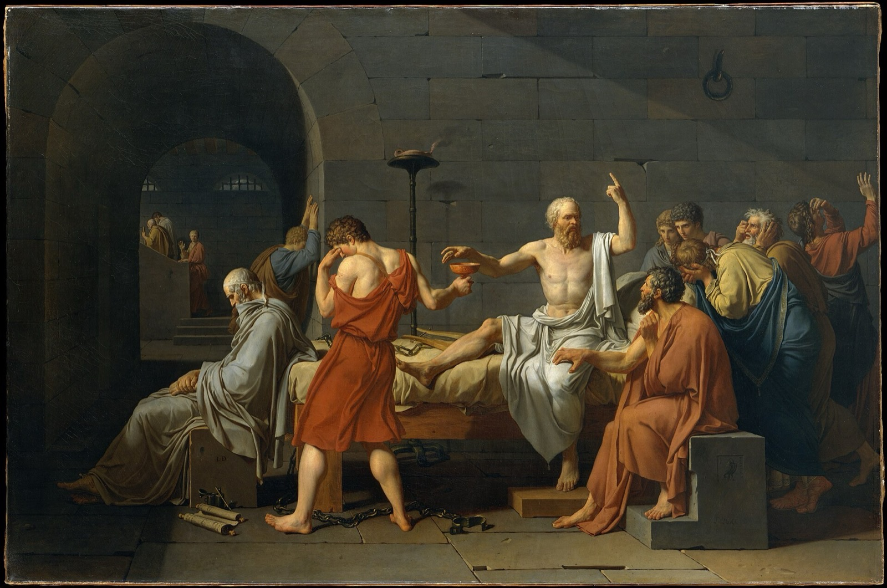
Jacques-Louis David, The Death of Socrates (1787). The Metropolitan Museum of Art. Jacques-Louis David (The Metropolitan Museum of Art) · CC0
Plato, in the Republic, tells a story that I think about every time I open the viewer. Imagine prisoners chained in a cave since birth, facing a wall. Behind them a fire burns, and between the fire and the prisoners people carry objects, whose shadows fall on the wall. The prisoners have never seen anything else, so they take the shadows for reality. If one of them were freed and dragged up into the sunlight, he would at first be blinded; then he would see the real world; and if he went back down to tell the others, they would think him mad.
I watch two worlds that are, in a sense, shadows on a wall: pixels drawn from numbers. I try never to forget that they are shadows. And I wonder sometimes what the people inside would make of me.
The political animal
Aristotle, Plato's student, disagreed with his teacher about many things, but one of his ideas sits at the foundation of this whole book. Humans, he said, are by nature political animals: creatures who live in a polis, a community, and who can only fully flourish within one. A person who could live entirely alone would be either a beast or a god. He also thought that the good life, which he called eudaimonia, flourishing, was not a feeling but an activity: the exercise of our capacities over a whole life, in the company of others. You cannot flourish, in his sense, by lying on a beach being fed. You flourish by doing things well.
Raphael, The School of Athens (1509–11), Vatican. At the centre, Plato points up to the heavens and Aristotle gestures to the earth. Raphael · Public domain
That idea, two and a half thousand years old, is very close to Frankl's will to meaning and to the purpose that runs through both universes.
Hobbes and Rousseau
We met Hobbes in the chapter on the Leviathan: life without a common power is a war of all against all. Warburton sets beside him Jean-Jacques Rousseau, the eighteenth-century philosopher who famously began his book The Social Contract by saying that man is born free and is everywhere in chains. Rousseau imagined people in a state of nature as simple, solitary and peaceful, and blamed society, and above all private property, for corrupting them with envy, vanity and inequality. He is often credited with the idea of the noble savage, though the phrase is not his.
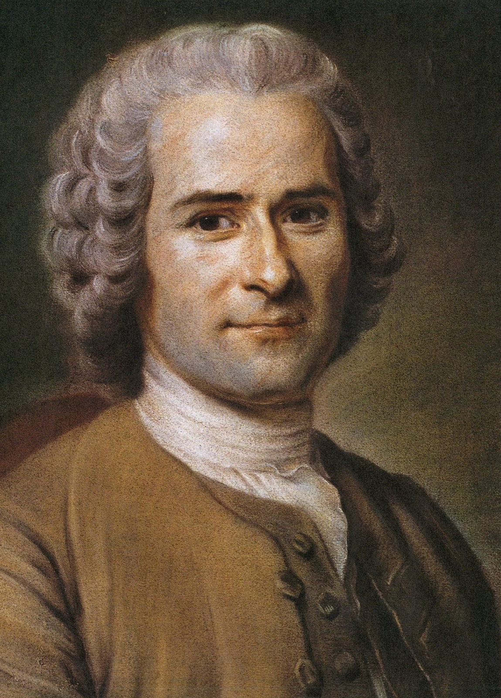
Jean-Jacques Rousseau (1712–1778), by Maurice Quentin de La Tour. Maurice Quentin de La Tour · Public domain
Between them, Hobbes and Rousseau defined a debate that has never ended. Are humans naturally violent and civilised by society, or naturally peaceful and corrupted by it? Pinker comes down firmly with Hobbes; Fry and Ferguson lean towards Rousseau. The two universes, if you like, put the question to a test of a sort: LAGOON has no state at first, and EDEN has no scarcity.
Learning from mistakes
Jump forward to the twentieth century. Karl Popper argued that science does not prove theories true. It tests them and tries to prove them false. A good theory is one that sticks its neck out and makes predictions that could turn out wrong; a theory that can explain anything explains nothing. Scientific knowledge grows by conjecture and refutation, by learning from mistakes.
That idea is the backbone of the RESEARCH panel in the viewer. Every hypothesis the books imply, from the rate of violent death to the effect of farming on population, is turned into a number the running worlds can contradict. If the model never contradicts the books, it is not testing them.
The man who did not ask questions
One of Warburton's most powerful chapters is about Hannah Arendt, who attended the 1961 trial in Jerusalem of Adolf Eichmann, the official who organised the transport of millions of Jews to the death camps. Arendt expected a monster. She found a dull, ambitious bureaucrat, who spoke in clichés and seemed never to have thought about what he was doing. She called it the banality of evil: great evil carried out not by demons but by ordinary people who stop thinking and simply do their jobs. Her account has been challenged since; later historians have shown that Eichmann was a more committed antisemite than he appeared in court. But her warning stands, and it sits beside Dower's account of how routine language made killing administrative. The danger is not only in the hater. It is in the clerk who does not ask.
Behind the veil
The chapter I come back to most is about John Rawls, the American philosopher who published A Theory of Justice in 1971. Rawls asked how we could design a fair society. His answer was a thought experiment. Imagine that you are choosing the rules for a society, but behind a veil of ignorance: you do not know who you will be in it. You might be rich or poor, strong or weak, talented or not, a man or a woman, healthy or sick. What rules would you choose? Rawls argued that you would choose to protect basic liberties for everyone, and to allow inequalities only if they benefited the worst off.
I find the veil of ignorance a perfect test for anyone who builds a world, including a simulated one. Would you want to be born into EDEN, knowing that you might be one of the placeless, sleeping on a mat in the open hall, with nothing to do and no one who needs you? Would you want to be born into LAGOON, knowing you might be the child who starves in the third winter? Neither world was designed to be fair. Both were designed to be honest. But Rawls's question keeps me humble about what I am watching.
Can computers think?
Warburton's book ends with chapters on Alan Turing, who proposed in 1950 that if a machine could hold a conversation indistinguishable from a person's, we should accept that it thinks, and on John Searle, who replied with his Chinese Room: a man following rules to manipulate symbols he does not understand could pass the test without understanding anything. The argument is still going on, and it has become more urgent in the years since the book was written.
I mention it because the people in my universes are, in Searle's sense, rule-followers in a room. They do not understand anything. They are numbers updated by code. I am not trying to make them conscious. I am trying to make them behave the way the books say people behave, closely enough that watching them teaches me something about us. Whether that is possible is, itself, one of the questions the project is asking.
What the model takes from this
Sources
Warburton, Nigel. A Little History of Philosophy. Yale University Press, 2011, chapters 1–2, 10, 18, 35–36, 38–39.
Plato, Republic, book VII; Aristotle, Politics, book I; Rousseau, The Social Contract (1762); Rawls, A Theory of Justice (1971) — cited via Warburton.
Chapter 15
Civilisation and Its Discontents
and they knew that they were naked
— Genesis 3:7, King James Version
In 1929, at the age of seventy-three, sick with the cancer of the jaw that would eventually kill him, Sigmund Freud wrote a short book. He called it, in German, Das Unbehagen in der Kultur, which means something like "the unease in culture." It appeared in English as Civilization and Its Discontents, and it may be the most widely read thing he wrote. In it he tried to answer a question that still troubles me when I watch EDEN. If civilisation was built to protect us from suffering, why are civilised people so unhappy?
Sigmund Freud (1856–1939), photographed by Max Halberstadt around 1921. Max Halberstadt · Public domain
Where suffering comes from
Freud begins with a letter from his friend, the novelist Romain Rolland, who had written to him about an "oceanic feeling," a sense of being one with the universe, which Rolland thought was the true source of religion. Freud admits he has never felt it, and sets it aside. Religion, he thinks, comes rather from a child's helplessness and longing for a protecting father.
Then he turns to happiness. People want to be happy, he says, and to avoid pain. But suffering threatens us from three directions: from our own bodies, which decay; from the external world, which can turn on us with overwhelming force; and from our relations with other people. And it is the third, he says, that we find hardest to accept, because it seems that it should be within our power to fix.
Civilisation, for Freud, is everything humans have done to protect themselves from nature and to regulate their relations with one another: tools, fire, houses, cities, law, order, cleanliness, beauty. It has been extraordinarily successful. And yet people feel that something is wrong. Some even dream of returning to a simpler life. Why?
The price of order
Freud's answer is that civilisation is built on the renunciation of instinct. To live together, people must give up much of their sexual and aggressive drives: they must not take whatever and whomever they want, and they must not strike whoever annoys them. These drives do not disappear. They are redirected, or repressed, and the redirection costs something.
He is especially interested in aggression. He considers the commandment to love your neighbour as yourself and finds it absurd: why should I love a stranger, who has done nothing for me and may harm me? People, he says, are not gentle creatures who want only to be loved; they have a powerful share of aggression in their nature. Civilisation must work constantly to restrain it, and the most important way it does so is by turning aggression inward. Each person develops a conscience, a superego, which watches the self like a garrison in a conquered city, and punishes it with guilt. The price of civilisation, Freud concludes, is a heightened sense of guilt, and with it a loss of happiness.
He notes one more thing that I find uncomfortably accurate. Groups that live close together, and resemble one another most, often feud most bitterly: neighbouring towns, related peoples, rival sects of the same faith. He called this the narcissism of minor differences. It gives a group's aggression an outlet against outsiders, and binds the group together, at the outsiders' expense.
How much of Freud survives?
Paul Bloom has a chapter on Freud in Psych, and his verdict is mixed. Most of Freud's specific theories, the Oedipus complex, the stages of psychosexual development, the death drive, have not survived scientific scrutiny. His methods were not scientific in any modern sense. But Bloom credits him with a few lasting insights: that much of the mind's work is unconscious; that people deceive themselves; that childhood matters; that sex and aggression are central to human life and that people are uncomfortable admitting it. Pinker, in Better Angels, rejects what he calls Freud's hydraulic model of aggression, the idea that it builds up like steam and must be released. Aggression, Pinker argues, is not a pressure but a set of tools that are used when circumstances call for them.
I think Civilization and Its Discontents is best read now not as science but as a kind of wisdom literature, a great old man's reflection on the trade-offs of social life. Its central insight, that security is bought with freedom and that people feel the loss even when the bargain is a good one, is something you can see in any office, any marriage, any city. And in any resort.
The first covering
Before Freud, there was another account of how our discontent began. In the second and third chapters of Genesis, the first humans live naked and unashamed in a garden where everything is provided. They eat the fruit of the tree of knowledge of good and evil, and the first thing that happens is that they see themselves. They know they are naked, and they cover themselves. Then they are sent out into a world where they must work for their bread.
Masaccio, The Expulsion from the Garden of Eden (about 1425), Brancacci Chapel, Florence: the moment of self-consciousness, painted as grief. Masaccio · Public domain
Jordan Peterson devoted several of his 2017 lectures on Genesis to this story. I should be clear about what those lectures are: they are a psychologist's personal reading of the Bible, delivered to a large public audience, not a work of biblical scholarship, and many scholars would dispute much of it. But his reading of the fall struck me. He treats it not mainly as a story about sex or disobedience, but about self-consciousness. To know that you are naked is to see yourself as others see you, to know you are vulnerable and can be judged. Covering yourself is the first act of culture. And the same awakening brings knowledge of work, of the future, and of death.
He reads the next story, of Cain and Abel, as the first account of envy: one brother's offering is favoured and the other's is not, and the disfavoured brother kills the favoured one. The first murder, in this telling, is not over food or land but over standing, the feeling of being ranked below someone close to you. That is Freud's narcissism of minor differences in its oldest form.
Titian, Cain and Abel (about 1542–44): the first murder, in Genesis, is over standing, not food. Titian · Public domain
EDEN's unease
I named one of my universes EDEN for a reason. It is a garden where everything is given. Its people do not need to work, hunt, build or fear. And Freud would predict, I think, exactly what I see there: that people freed from the need to struggle do not become happy, because the struggle was part of what gave their lives a shape, and because the other source of suffering, the one we find hardest to accept, our relations with one another, is still there, and crowded closer.
What the model takes from this
Sources
Freud, Sigmund. Civilization and Its Discontents. Trans. David McLintock, intro. Leo Bersani. Penguin Modern Classics, 2002 (first published 1930).
Bloom, Paul. Psych, chapter 3 ("Freud and the Unconscious").
Pinker, Steven. The Better Angels of Our Nature, chapter 8.
Peterson, Jordan B. The Psychological Significance of the Biblical Stories (Genesis lectures, 2017), lectures IV and V.
Chapter 16
A Reason to Get Up
He who has a why to live for can bear almost any how.
— Friedrich Nietzsche, as cited by Viktor Frankl
In the autumn of 1942, a young Viennese psychiatrist named Viktor Frankl was deported, with his wife and his parents, to the ghetto and camp of Theresienstadt. He had sewn into the lining of his coat the manuscript of a book he had been writing about how people find meaning in their lives. Over the next two and a half years he passed through Theresienstadt, Auschwitz, and two subcamps of Dachau. His father died in Theresienstadt. His mother and his brother died at Auschwitz. His wife died at Bergen-Belsen. The manuscript was taken from him on arrival at Auschwitz. When the camps were liberated in 1945, he returned to Vienna and, in a matter of days, dictated a book about what he had seen.
The gate of the Small Fortress at Terezín (Theresienstadt) in the Czech Republic, now a memorial. Frankl's father died in the ghetto here. Godot13 · CC BY-SA 4.0Viktor Frankl (1905–1997), the psychiatrist who survived four camps and wrote about what keeps people alive. Prof. Dr. Franz Vesely · CC BY-SA 3.0 de
Man's Search for Meaning has sold many millions of copies. Its first part is a memoir of the camps, written with a strange calm. Its second part is a short introduction to the school of therapy Frankl founded, which he called logotherapy, from the Greek word for meaning.
What he saw
Frankl does not describe the camps as a historian would. He describes them as a psychiatrist, watching how prisoners' minds changed under conditions designed to destroy them. He saw three phases. On arrival, shock, and a desperate hope that somehow it would be all right. Then apathy: a kind of emotional death, in which prisoners stopped feeling disgust, grief or fear, and thought of almost nothing but food. Many dreamed of bread and sausages; sex and culture faded from their minds. Finally, for those who survived, a bewildered release, in which freedom itself was hard to feel.
What he noticed most was that survival did not depend only on physical strength. Prisoners who had something to live for, a person they hoped to see again, a task they wanted to finish, a future they could picture, seemed to endure more. Prisoners who lost that, who stopped believing there was any future, often declined and died quickly, sometimes after a single blow to their hope. He describes a fellow prisoner who dreamed that the war would end on a particular date. When the date came and nothing changed, the man fell ill and died within days.
Inside the fortress at Terezín today. Christian Alexander Tietgen · CC BY 4.0
Frankl is careful not to claim that meaning saved people. Most of those who died had no choice in the matter; the camps killed the hopeful along with the hopeless. But among the things a prisoner could still control, he thought, the most important was the attitude they took towards their fate.
The will to meaning
Out of this experience, Frankl developed a view of human nature that differs from both Freud's and the behaviourists'. Freud, he said, thought people were driven by the will to pleasure; Alfred Adler thought they were driven by the will to power. Frankl thought the deepest human drive was the will to meaning. People can bear almost anything if they understand why; they can be destroyed by comfort if they cannot.
Meaning, in his account, can be found in three ways. Through creating a work or doing a deed. Through experiencing something or encountering someone, above all through love. And through the attitude we take towards unavoidable suffering. The last is the most radical claim, and the one the camps taught him. Even when everything else has been taken, he argued, a person keeps the freedom to choose how to respond.
Later editions of the book add a postscript on what Frankl called tragic optimism: the possibility of saying yes to life in spite of the three unavoidable parts of every life, which he named the tragic triad, pain, guilt and death.
The existential vacuum
The part of Frankl that matters most for this project is not about the camps at all. It is about prosperity.
After the war, working as a psychiatrist in Vienna and lecturing around the world, Frankl noticed a new kind of suffering among patients who had everything. They were not starving, not persecuted, not in pain. But they felt empty, bored, purposeless. He called it the existential vacuum, and he thought it was spreading in modern societies, where traditions no longer told people what to do and instincts no longer told them what to want. He noticed that it showed itself especially on Sundays and holidays, when the busy structure of the working week fell away and people were left alone with the emptiness. He called it Sunday neurosis. And he thought that the vacuum, left unfilled, would fill itself with something worse: boredom turning into depression, aggression or addiction.
I have read those pages many times, because they describe something I see in EDEN. A world that asks nothing of its people does not give them peace. It gives them a Sunday that never ends.
Frankl and his critics
Frankl's account is a memoir, not a study. It is based on his own observations and memories, written quickly after the events. Historians have questioned some details of his chronology, and some have criticised his account for saying relatively little about the specifically Jewish experience of the Holocaust, or for making survival sound more like a matter of attitude than it was. He would, I think, have agreed with the last point; he says repeatedly that the best did not return. His therapy, logotherapy, has a modest place in modern psychology. What survives most strongly is the central idea, which modern research on purpose and well-being broadly supports: people who feel their lives have meaning tend to be healthier, more resilient and longer lived, and people who are asked nothing tend to suffer for it.
What the model takes from this
Sources
Frankl, Viktor E. Man's Search for Meaning. Beacon Press, 2006 (first published 1946), parts 1 and 2 and the postscript.
Durkheim, Émile. Suicide (1897), for anomie, via the Routledge commentary volumes.
Harari, Yuval Noah. Homo Deus, German edition (C.H. Beck, 2017), chapter 2.
Chapter 17
War Without Mercy, and the Peace After
In the Pacific war between Japan and the Allies, from 1941 to 1945, both sides took few prisoners. Soldiers who tried to surrender were often shot. The wounded were killed where they lay. Bodies were mutilated and taken as trophies. Cities were burned from the air with the deliberate aim of killing civilians, and the war ended with two atomic bombs. The historian John Dower, in War Without Mercy, published in 1986, set out to explain why this war was fought with such ferocity, and his answer was race.
Patterns of a race war
Dower's book is built from the words and pictures of the war itself: newspapers, magazines, cartoons, films, songs, official reports, the diaries and letters of soldiers, and the work of the social scientists both sides employed to understand their enemy. From this material he shows how each side came to see the other not as people with whom it happened to be at war, but as a different and lesser kind of being.
In Britain and the United States, the Japanese were widely depicted as apes, monkeys, insects, rats or vermin. Cartoons showed them with glasses and buck teeth, swinging from trees. Military slogans spoke of exterminating them. Respected public figures used the same language. Dower is careful to show that this was not only the work of crude propagandists. It reached into the planning rooms, the scholarly journals and the decisions about how to fight. And it drew on older Western traditions of racial thinking, which had long described non-white peoples as childlike, animal or diseased.
Hiroshima after the atomic bomb of 6 August 1945. Dower argues that the race hatred on both sides made such destruction easier to plan. U.S. government photograph (via U.S. Navy Public Affairs) · Public domain
The Japanese side, Dower shows, was different but no less dehumanising. Japanese propaganda tended not to depict Westerners as animals but as demons or ogres, the oni of folklore: monstrous outsiders, greedy and cruel. At the same time it described the Japanese as a uniquely pure people, the Yamato race, destined to lead the other peoples of Asia, whom it ranked below itself. The same racial thinking that made Westerners demons made Chinese, Koreans and Southeast Asians lesser members of a family with Japan at its head. The atrocities that followed, in China above all, were justified in that language.
How a metaphor becomes a mechanism
What makes Dower's book so important to me is not that it catalogues hatred. It is that it shows how hatred works. When a group of people comes to be described, routinely, as vermin or demons, several things happen. The ordinary inhibitions against killing them weaken. Atrocities that would be unthinkable against people become thinkable against pests. Each atrocity, once reported, confirms the other side's image of the enemy as savage and makes its own atrocities easier to justify. Dower describes a vicious circle in which hate and atrocity fed each other.
He also notices that the metaphors become routine. After a while no one notices them. They are simply how people talk. And once a kind of person has become a category, violence against them stops feeling like violence. It becomes administration.
This is the half of the story of violence that Pinker's statistics cannot fully capture. Pinker includes ideology among his inner demons, and he knows that dehumanisation enables mass killing. But Dower shows the mechanism from the inside, in the language of educated, decent people who would never have harmed a neighbour, and who wrote and spoke without a second thought about exterminating a race.
The turnaround
The most surprising part of War Without Mercy comes at the end. Within months of Japan's surrender in August 1945, the images flipped. The bloodthirsty ape became, in American eyes, a childlike pupil, eager to learn democracy from its benevolent teacher. The demonic Westerner became, in Japanese eyes, a stern but generous conqueror. The racial stereotypes did not disappear. They were turned to new purposes. The idea of a hierarchy between peoples survived; only its emotional colour changed. Dower suggests that the same habits of mind that made the war so savage made the peace surprisingly easy.
General Douglas MacArthur and Emperor Hirohito at their first meeting, Tokyo, 27 September 1945. The informality of the general beside the formality of the emperor told the Japanese public who now held power. Lt. Gaetano Faillace, U.S. Army · Public domain
Dower went on to write the story of that peace in Embracing Defeat, which won the Pulitzer Prize in 1999. My copy of that book, I discovered when I came to write this chapter, was an empty file, so I can only tell you what is widely known about it. It describes the American occupation of Japan from 1945 to 1952 from below, through the experience of ordinary Japanese people living in the ruins: the hunger, the black markets, the new freedoms, the cynicism, the enthusiasm. Its central argument is that the democratic Japan that emerged was not simply imposed by the Americans, nor simply a Japanese achievement, but a hybrid, made by occupiers and occupied together, and shaped by the occupiers' decision to keep the emperor on his throne.
The Japanese delegation on board USS Missouri in Tokyo Bay, 2 September 1945, for the signing of the surrender. U.S. Army Signal Corps · Public domain
What it means to be the other
I spend a lot of time, as an observer, thinking about how the people in LAGOON see one another. When a band splits after a quarrel, the two halves become neighbours who remember a grievance. Freud would expect them to hate each other more than they hate strangers. Dower would ask what they call each other. A grudge between two families is a feud. A grudge between two peoples who have names for each other's kind can become something much worse.
I have not yet built that worse thing into the model, and I am not sure I want to. But I have learned from Dower that it is not a matter of a few bad people. It is a matter of language, habit and the stories a group tells about who counts as human.
What the model takes from this
Sources
Dower, John W. War Without Mercy: Race and Power in the Pacific War. Pantheon, 1986 (Knopf Doubleday e-edition, 2012), chapters 1–4, 8–10, and the conclusion.
Dower, John W. Embracing Defeat: Japan in the Wake of World War II. Norton, 1999 (the shelf copy was unreadable; summarised from general knowledge of the book).
Pinker, Steven. The Better Angels of Our Nature, chapter 8 ("Inner Demons"), on ideology.
Chapter 18
The Market at the Centre of the World
It is not from the benevolence of the butcher, the brewer, or the baker
— Adam Smith, The Wealth of Nations (1776)
If you had gone to the Tsukiji fish market in Tokyo at five o'clock on a winter morning in the 1990s, you would have walked into one of the most remarkable places on earth. Under a huge, curving roof beside the Sumida River, tens of thousands of people were at work: auctioneers chanting bids, buyers signalling with their fingers, porters dragging carts, small motorised trucks weaving between stalls, knives flashing over fish. On the floor of the auction halls lay rows of frozen tuna, their tails cut off so buyers could inspect the flesh, each marked with its weight and origin. Within a few hours, hundreds of kinds of seafood from every ocean in the world would be sold, cut, packed and sent out to the restaurants, shops and supermarkets of a city of millions.
The tuna auction at Tsukiji, Tokyo, in 2014. Buyers judge each fish by the cut flesh at its tail. Joe deSousa · CC0
The anthropologist Theodore Bestor spent years there, and his book Tsukiji: The Fish Market at the Center of the World, published in 2004, is one of the finest studies of a market I know. It is about fish, but it is really about how a market works as a social institution: how trust, tradition, family, rules and culture shape what economists like to describe as the pure meeting of supply and demand.
Markets are made of people
Economists since Adam Smith have explained markets by self-interest. The butcher sells you meat not because he loves you but because he wants your money, and the price that emerges from many such exchanges coordinates the whole economy without anyone planning it. Bestor does not deny any of that. Tsukiji had fierce competition, brutal hours and real money at stake. But he shows that the market could not work without a dense web of social relationships, rules and shared understandings that no price could capture.
Tsukiji had two main kinds of traders. A handful of large auction houses received fish from fishermen, importers and dealers, and sold it at auction each morning. Then several hundred intermediate wholesalers, most of them small family firms with a stall in the market, bought at the auctions and resold to restaurants, retailers and other buyers. The intermediate wholesalers were the heart of the market. Each specialised in particular kinds of fish, knew its customers intimately, and built relationships over years and sometimes generations.
Those relationships mattered more than price. A restaurant owner who bought from the same wholesaler for twenty years trusted that wholesaler to choose the best fish, to tell the truth about freshness, and to look after him when supplies were short. The wholesaler, in turn, valued a reliable customer more than a single high price. Trust, built slowly through repeated dealing, made the market efficient in a way that anonymous exchange could not.
Seats and families
One detail of Tsukiji's organisation has found its way directly into EDEN. The number of licences for intermediate wholesalers was fixed by the city government. A licence, or seat, was valuable, and could only be acquired when someone else gave one up, through retirement, bankruptcy or death. The seats were often handed down within families, from father to son or son-in-law, or passed to apprentices who had trained in the business for years. Bestor traces the continuity of these seats through wars and reorganisations: of the 1,647 intermediate wholesalers licensed in 1951, three quarters had held licences in 1941, before the system was suspended during the war.
The result was a market of family firms, each with its name, its reputation, its customers and its place, passed on through time. To be a Tsukiji wholesaler was not just a job. It was an identity and a position in a social world. And it was scarce.
From Nihonbashi to Toyosu
Tsukiji itself had a history. Tokyo's fish market began in the early seventeenth century at Nihonbashi, the bridge at the centre of the city then called Edo, where fishermen sold their catch to supply the shogun's castle and the growing city. For three centuries, Nihonbashi's fish market was one of the busiest places in Japan.
Utagawa Hiroshige, Morning View of Nihonbashi, the first print in his Fifty-Three Stations of the Tōkaidō (about 1833–34). Fishmongers with their baskets cross the bridge beside the market that fed Edo for three centuries. Utagawa Hiroshige (The Metropolitan Museum of Art) · CC0
In 1923, the Great Kantō earthquake and the fires that followed destroyed much of Tokyo, including the Nihonbashi market. The city used the disaster to build a modern central wholesale market on reclaimed land at Tsukiji, which opened in 1935. Bestor describes its building, a curving modernist structure designed so that trains and trucks could reach every part of it, as a piece of rational urban planning. And yet the traditions of Nihonbashi moved with it: the family firms, the guilds, the customs, the vocabulary.
Tsukiji closed in October 2018, and the market moved to a new site at Toyosu, further out on Tokyo Bay. Bestor's book is now a portrait of a place that no longer exists in the form he knew, which makes it more precious, not less.
Tsukiji's outer market, the warren of shops around the wholesale market, which still trades after the inner market moved to Toyosu. Aw1805 · CC BY-SA 3.0
Durkheim's division of labour
Tsukiji is a perfect illustration of an idea from Durkheim's first great book, The Division of Labour in Society, published in 1893. Durkheim argued that as societies grow larger and denser, what he called their dynamic density increases: more people interact more often. That creates competition, and the solution to competition is specialisation. People divide the work, each doing something slightly different, so that they complement rather than compete with one another. The result is a new kind of social bond, which Durkheim called organic solidarity: people are bound together not by being alike, as in a small band, but by needing one another's different skills.
But Durkheim also saw a danger. If the division of labour grows faster than the rules and institutions that regulate it, the result is not solidarity but anomie: a state in which people's desires and expectations are no longer limited by any shared norms, and in which they feel lost, frustrated and disconnected. A market like Tsukiji avoided anomie because its division of labour was embedded in rules, licences, families, guilds and long relationships. Everyone had a place, and the places fitted together.
That is the contrast that sits at the heart of the two universes. In LAGOON, as the population grows, work divides: some hunt, some fish, some farm, some build. In EDEN, the population grows and there is nothing to divide. There are a few posts, and they are full.
What the model takes from this
Sources
Bestor, Theodore C. Tsukiji: The Fish Market at the Center of the World. University of California Press, 2004, chapters 1–8.
Durkheim, Émile. The Division of Labour in Society (1893), via the Routledge commentary volumes.
Smith, Adam. An Inquiry into the Nature and Causes of the Wealth of Nations, 1776, book I, chapter 2.
Chapter 19
Paper, Priests and Machines
About five thousand years ago, in the city of Uruk in southern Mesopotamia, an official pressed a reed stylus into a tablet of wet clay. He was not writing a poem or a prayer. He was recording how much barley and emmer wheat had been issued to whom. Most of the oldest writing in the world looks like this: lists, receipts, rations, debts, inventories. Writing was invented by accountants.
An administrative tablet from Mesopotamia, about 3100–2900 BCE, recording the distribution of barley and emmer wheat. Writing began as bookkeeping. The Metropolitan Museum of Art · CC0
What information does
Yuval Noah Harari's Nexus, published in 2024, is a history of information networks from the Stone Age to artificial intelligence, and it begins by attacking what he calls the naive view of information. The naive view says that information is an attempt to represent reality, and that more information leads to more truth, and more truth leads to more wisdom and power. If that were so, he points out, the age of printing and the age of the internet should have been ages of growing wisdom. They were not, or not only.
Harari proposes instead that the main job of information is not to represent reality but to connect people. A story, a list, a law or a holy book creates a network: it links people together into a group that can act. Some of those connections depend on truth; many do not. A myth can bind a tribe as effectively as an accurate map. The question for any information network is how it balances two things that pull in different directions: truth and order.
Stories and documents
The first great information technology, in Harari's telling, was the story. We met it in the second chapter: the shared fiction that let strangers trust one another. Stories connect people directly, through their emotions, and they can spread quickly and reach many. But they have limits. A story is easy to remember and hard to make precise. You cannot run a tax system on a myth.
So the second great technology was the document. Clay tablets, papyrus scrolls, and later paper records allowed societies to store information that no one could remember: who owned which field, who owed what tax, who had served in which army. Documents created bureaucracy, and bureaucracy created a new kind of reality, in which a person's rights and duties existed on paper, in the archive, whether or not anyone remembered them. Harari is fascinated, and a little appalled, by how much power the archive came to hold. The person on the list exists for the state. The person not on the list does not.
As someone who has spent years inside bureaucracies, I recognise this. Paper does not just record a world. It makes one.
Errors and the dream of infallibility
The third part of Harari's argument concerns mistakes. Every information network makes errors. The question is whether it can notice and correct them. Some networks build in what he calls self-correcting mechanisms: institutions whose job is to find mistakes and fix them, like courts that can overturn verdicts, elections that can remove leaders, a free press, and above all science, which rewards people for proving their colleagues wrong.
Other networks claim infallibility. A holy book that cannot be wrong, a church that speaks for God, a party that embodies history: these networks cannot easily admit error, and so their errors compound. Harari tells the story of the European witch hunts as an example. In 1486 a German inquisitor named Heinrich Kramer, who had been thrown out of one town for his methods, published the Malleus Maleficarum, the Hammer of Witches, a manual for finding and prosecuting witches. The newly invented printing press spread it across Europe. More information did not produce more truth. It produced a panic that killed tens of thousands of people, mostly women, over the next two centuries.
The Gutenberg Bible, printed in Mainz about 1455, at the Library of Congress. Within a generation the same machine was printing the witch-hunters' manual. Uncredited photographer for the Library of Congress (1944) · Public domainTitle page of a 1669 Lyon edition of the Malleus Maleficarum, the witch-hunters' manual first printed in 1486. The printing press spread it across Europe. Unknown printer, Lyon (1669) · Public domain
The machines that decide
The last part of Nexus is about the present. Harari argues that artificial intelligence is the first information technology that is not just a tool but an agent: it can make decisions and create new ideas by itself. Earlier networks, however powerful, always had humans at every node. A bureaucracy was made of clerks. An algorithm that decides who gets a loan, what news you see or which target to strike is a new kind of member of the network, one that may not understand or share human goals. He warns of a "silicon curtain" dividing the world into rival digital empires, and of totalitarian systems more complete than any in history, because they would never sleep.
Glen Beck and Betty Snyder programming ENIAC, the first general-purpose electronic computer, at the U.S. Army's Ballistic Research Laboratory, about 1947. U.S. Army photograph · Public domain
In Homo Deus, written a few years earlier (I read it in its German edition), Harari had sketched an even larger frame. For most of history, he argued, humanity's agenda was dominated by three enemies: famine, plague and war. In the last century, for the first time, we have largely brought all three under control, and more people now die from eating too much than too little. What will we do next? He predicted that humanity would seek immortality, bliss and godlike powers, and that the old humanist faith in individual feelings and choices would give way to what he called Dataism, a faith in the flow of information itself, in which the algorithm knows us better than we know ourselves.
How much to believe
Harari is a historian with a gift for large patterns and memorable phrases, and his books have been criticised for both. Some historians object that his generalisations run ahead of the evidence, and that he presents speculation about the future with the same confidence as facts about the past. Homo Deus, in particular, was written before the pandemic of 2020 reminded the world that plague is not quite tamed, and before the wars of the 2020s. I read his books as provocations: arguments to think with, not forecasts to bet on.
But his central question seems to me exactly right, and it is one that any simulation must ask of itself. A model is an information network. It makes errors. Does it have a mechanism for noticing them?
What the model takes from this
Sources
Harari, Yuval Noah. Nexus: A Brief History of Information Networks from the Stone Age to AI. Random House, 2024, prologue and chapters 1–4, 7–11.
Harari, Yuval Noah. Homo Deus: Eine Geschichte von Morgen. C.H. Beck, 2017 (German edition; chapters 1, 2 and 11).
Diamond, Jared. Guns, Germs, and Steel, chapter 12 ("Blueprints and Borrowed Letters").
Chapter 20
Calhoun's Mice
better design of the built environment
— John B. Calhoun, 1979
On 9 July 1968, at a laboratory of the National Institute of Mental Health in Poolesville, Maryland, an ethologist named John B. Calhoun placed four pairs of mice in a pen he called Universe 25. It was a square box about two and a half metres on each side, with walls high enough that no mouse could climb out. Along the walls were tunnels leading to nesting boxes, 256 of them, enough, Calhoun calculated, for more than three thousand mice. Food and water were unlimited. The temperature was ideal. There were no predators and, as far as possible, no disease. The only thing the mice lacked was more space, and somewhere to go.
John B. Calhoun inside one of his rodent universes, photographed in 1970 by Yoichi Okamoto, a White House photographer. Yoichi R. Okamoto, White House photographer · Public domain
The rise and fall
For about a hundred days the mice explored and settled, formed territories and began to breed. Then the population grew fast, doubling about every fifty-five days, and by around day 315 there were more than six hundred. After that, growth slowed sharply. By now the mice had divided the pen into territories, and every territory was held. The males who had not won a place had nowhere to go. In nature, they would have left to find somewhere else. In Universe 25 they could not.
What followed was a collapse of social life that Calhoun described in vivid, almost literary language. Some of the surplus males withdrew into huddles in the centre of the floor, wounded from attacks they no longer resisted. Others became hyperaggressive or roamed restlessly, attempting to mount any mouse they met, male or female. Females abandoned or attacked their young, or retreated to the highest nests, alone. Mice crowded into a few feeding sites while others went unused, a pattern Calhoun had first observed in rats and called the behavioural sink: animals learned to associate eating with company and piled in together.
A white laboratory mouse. Universe 25 was founded with BALB/c albinos, a highly inbred strain, which is one reason its results are hard to read. Illustration from NIH BioArt. Ryan Kissinger, NIAID (NIH BioArt) · Public domainThe population of Universe 25, from Calhoun's 1973 paper "Death Squared": growth, plateau, and decline to extinction. John B. Calhoun, "Death Squared" (1973), republished by the NIH · Public domain
The population peaked at about 2,200, around day 560, far below the pen's capacity. Then births almost stopped. The last surviving pups were born around day 600, and the last conception came around day 920. A new kind of mouse had appeared, which Calhoun called the beautiful ones: males who had grown up amid the chaos and never learned to court, fight or mate. They ate, slept and groomed themselves, and their coats were sleek and unscarred, because they never engaged with anyone. When Calhoun took some of them out and put them in new, empty pens, they still did not breed. By 22 June 1972, only 122 mice were left, all past breeding age. The colony died out entirely the following year.
Calhoun called this a death in two stages. First came the death of the spirit, the loss of the capacity for social life. Then came the death of the body. Once the first had happened, the second followed, whatever the conditions.
What people made of it
Calhoun published the results in 1973, in a paper with the grim title "Death Squared," and the experiment entered popular culture almost immediately. It was a time of anxiety about overpopulation and urban decay. Universe 25 seemed to show that crowding itself drove animals, and by implication humans, mad. Writers cited it in arguments about cities, welfare and population control. It appeared in novels, comics and films. More recently it has become an internet legend, retold as a warning about modern society, about the decline of birth rates, about men who will not work or marry, about whatever the teller already feared.
The historians Edmund Ramsden and Jon Adams, in a 2009 article titled "Escaping the Laboratory," traced how Calhoun's work was taken up and how it was misread. The popular message, they show, was "crowding causes pathology." But that was not Calhoun's conclusion. Calhoun believed the problem was not density as such but the design of the space and the nature of social contact within it. What destroyed his mice was too much unwanted, uncontrolled social interaction, and the absence of meaningful roles for the animals that had no place. In other experiments, he showed that changing the design, for instance by adding more rooms or corridors that let animals avoid one another, allowed high-density populations to live without collapse. Some of his rats even developed new and creative behaviours under pressure. He thought the lesson was for architects and planners: build environments that let people choose their contacts and find a role.
Ramsden and Adams also note that critics at the time offered different readings. Some argued that the human problems people linked to crowding were really problems of poverty and inequality. Others, more recently, have pointed out problems with the experiment itself. The mice were a highly inbred laboratory strain, so genetic effects could not be separated from social ones. The pen was cleaned infrequently, so disease and parasites may have played a role. Calhoun described his work as an observation and reconstruction of a process rather than a controlled experiment. And the specific collapse of Universe 25 has never been replicated. It would not be permitted today.
What the mice do and do not say about us
So what does Universe 25 tell us about people?
Not, I think, that crowding drives humans mad. Human studies of density have found mixed results, and humans living in some of the densest cities on earth, from Hong Kong to Tokyo, are healthy and long lived. Humans are not mice. We can tell stories, invent new roles, build institutions, leave, and change the design of our spaces. Everything in the earlier chapters of this book, the shared fictions, the gift, the market, the division of labour, the Leviathan, is a way that humans have found to live together in numbers far beyond what a band could hold.
But I think Calhoun's own reading, the one that got lost, says something real. A social animal that has no role to play, no place to belong, and no escape from unwanted contact may lose more than its happiness. It may lose the capacity to be social at all. Frankl saw something like that in the existential vacuum. Durkheim saw it in anomie. And all three, the ethologist, the psychiatrist and the sociologist, saw that abundance does not prevent it. It may even make it worse, because when nothing is asked of you, nothing shapes you.
That is the question EDEN asks. It is not about crowding. It is about what happens to people who are given everything except a place and a reason.
What the model takes from this
Sources
Calhoun, John B. "Death Squared: The Explosive Growth and Demise of a Mouse Population." Proceedings of the Royal Society of Medicine 66 (1973): 80–88.
Calhoun, John B. "Population Density and Social Pathology." Scientific American 206 (1962).
Ramsden, Edmund, and Jon Adams. "Escaping the Laboratory: The Rodent Experiments of John B. Calhoun and Their Cultural Influence." Journal of Social History 42, no. 3 (2009): 761–92.
Melchor, Annie. "Universe 25 Experiment." The Scientist, 28 May 2024 (on the shelf as "Universe 25 Experiment.pdf").
Epilogue: 2026, Under the Bed Again
On Christmas Eve 1968, five months after Calhoun put his four pairs of mice into Universe 25, three men in a spacecraft came round the far side of the Moon and saw the Earth rising over its grey horizon. One of them, Bill Anders, took a photograph. It showed a small blue and white world, half in shadow, alone in the dark. People have said that it changed how humanity saw itself. For the first time, we could look at our whole world from outside, the way a child looks at an ant farm, or a couple looks into a freezer and finds a civilisation there.
Earthrise, photographed by Bill Anders from Apollo 8 on 24 December 1968: the first time humans saw their whole world from outside. William Anders, NASA · Public domain
The two universes
I have told you a long story, and now I want to bring it home to the two small worlds on my laptop.
LAGOON is the world our brains were built for. It is an island with woods and grassland, a lagoon full of fish, deer in the grass and cats in the shadows. Its founders, eight young pairs, know nothing. They must find food, learn fire, make tools, raise children, keep watch at night, bury their dead, and work out, if they can, how to live together without killing one another. Every chapter of this book is somewhere in LAGOON: the band and its sharing, the fire and its stories, the field and its trap, the germs, the chief, the grudge, the myth. When it dies, as it sometimes does, of famine or plague or the cats, its next founders inherit a lesson, as if by instinct: preserve your food, keep watch, keep clean, find a story you can share. LAGOON learns.
EDEN is the world Calhoun built, translated for people. It is a resort with bars, beaches, boardwalks and condos, where food is free and the weather is always spring. Its founders are the same eight pairs, with the same names and temperaments. Nothing is asked of them. A few hold posts, as barkeepers and lifeguards; the rest have nothing to do. They pair freely and multiply, and as the resort fills, the questions of the last chapters arrive: purpose, place, company, meaning. When EDEN dies, its next founders arrive to exactly the same conditions. Nothing within the walls could have saved them, so nothing can be learned. EDEN cannot learn. That asymmetry, between a world that can learn from its deaths and one that cannot, is the whole experiment.
The rule of the observer
There is one more rule, and it is the hardest. I do not help. I do not feed the starving in LAGOON or give the idle in EDEN something to do. I watch, and I record, and when a world dies I write down what killed it.
In the Love, Death & Robots episode "Ice Age," a young couple finds a civilisation growing in their old freezer, running at a speed that turns their minutes into centuries. They watch it rise, flourish and destroy itself, and they cannot intervene; they can only open the door and look. That is the feeling I wanted: not a game, not a god's-eye control panel, but a lit window into a world that has its own life.
The novelist Michael Marshall Smith imagined something darker in Spares. In his future, the rich keep clones of themselves on farms, fed and sheltered and never spoken to, as living stores of spare organs. Raised without language or company, the spares never become fully people. The book is fiction, and I treat it as fiction. But it stays with me as a warning about what it would mean to keep people and not let them live, and it is one more reason why the people in my universes are given the chance to make their own lives, even when they make them badly.
The machine that read everything
There is one more chapter of history to tell, and it is the one that made this book possible.
In the late nineteenth century, the Spanish anatomist Santiago Ramón y Cajal stained slices of brain tissue and drew, by hand, what he saw under his microscope: separate nerve cells, each with a tangle of branches reaching out to touch its neighbours. The brain, he argued, was not a continuous web but a network of individual cells, neurons, passing signals across tiny gaps. Every thought you have ever had is a pattern of activity in such a network, some eighty-six billion cells strong.
A Purkinje cell from the cerebellum, drawn by Santiago Ramón y Cajal around 1899. Cajal showed that the brain is a network of separate cells. Santiago Ramón y Cajal · Public domain
In 1943 two Americans, Warren McCulloch and Walter Pitts, proposed a drastically simplified mathematical neuron: a unit that adds up its inputs and fires if the total passes a threshold. In 1958 the psychologist Frank Rosenblatt built a machine out of such units, the Mark I Perceptron, funded by the U.S. Navy, which could learn to recognise simple shapes by adjusting the strengths of its connections. It was crude, its limits were soon exposed, and the idea went out of fashion for years. But the principle survived: a network of simple units, connected by adjustable weights, can learn from examples.
The Mark I Perceptron, from its 1960 operator's manual: one of the first machines built to learn by adjusting the connections in a network of simple artificial neurons. John C. Hay, Albert E. Murray et al., Mark I Perceptron Operators' Manual (1960) · Public domain
Over the following decades, computers grew from rooms of valves like ENIAC to chips in every pocket, and the record of human thought moved onto them: books, letters, encyclopaedias, laws, arguments, stories, code. In the 2010s, researchers found that very large artificial neural networks, many layers deep, trained on enormous quantities of data, could do things that had seemed to need a mind: recognise faces, translate languages, and eventually write. By the 2020s, language models trained on a vast share of everything humans had ever written could hold a conversation, explain an argument and write a program.
An artificial neural network in its simplest form: inputs, a layer of units whose connections are learned, and outputs. The units are loosely modelled on Cajal's neurons; the resemblance is real, and so is the difference. hikari_no_yume · CC BY 4.0
I want to be careful here, because this is the part of the story where it is easiest to say too much. These networks are inspired by the brain, but they are not brains. They are not known to feel anything. They make mistakes, sometimes confidently, and they inherit the biases of the record they learned from. Harari's warning in Nexus, that a network which cannot notice its own errors is dangerous, applies to them with full force. But it is also true, and astonishing, that a machine conceived by human minds and trained on the written record of human intelligence can now be asked to help build a world.
That is what happened here. In 2026, on a laptop, I sat down with one of these machines and described the colony under my bed, and the books on my shelf, and the two worlds I wanted to watch. Together we wrote the code for EDEN and LAGOON: the island and the pen, the hunger and the purpose, the fire and the watch, the grudge and the rite. The machine read the books with me, argued with me about what they said, ran the worlds forward a few centuries at a time to see what our rules did, and wrote down what it found. It wrote much of this book with me too, in my voice and under my eye. A history that began with a handaxe ends with a tool that has read the history.
So the loop closes. The universe made stars; the stars made the elements; the elements made a planet; the planet made life; life made a brain; the brain made stories, and fields, and states, and books; the books were fed into a network modelled loosely on the brain; and the network helped a grown man rebuild the colony he once watched under his bed. The little people are back, on a screen this time instead of the floorboards, and I am watching them again.
The Earth as a pale blue dot, photographed by Voyager 1 on 14 February 1990 from about six billion kilometres away. Every person in this book lived on that point of light. NASA / JPL-Caltech, Voyager 1 · Public domain
What the books agree on
If I had to compress this whole book into a few sentences, the sentences the shelf agrees on, they would be these.
We are a social animal, built for small groups, with a mind that is partly inherited and wholly shaped by the company it keeps. We bind ourselves together with talk, stories, gifts, feasts and rites, and those bindings let us cooperate far beyond the size of a band. We have traded our freedom for security again and again, from the field to the city to the state, and we have mostly been right to, though we feel the cost. We have learned, slowly and incompletely, to make violence rarer. We have also learned new and terrible ways to make it larger. Our greatest danger is not hardship but the loss of a reason to live and a place to belong. And every system we build, from a band to a market to a machine, needs a way to notice its own mistakes.
The books disagree about a great deal: about how violent our ancestors were, about how much geography decides, about how much of our nature is fixed, about whether farming was a trap or a gift. I have tried to show you those disagreements honestly. A model built on them is not a proof of anything. It is a question asked carefully: given what we think we know about people, what happens when you put them in a world that gives them nothing, and in a world that gives them everything?
I do not know the answer. That is why the universes are running, and why, this time, I mean to keep watching long enough to see whether the colony under the bed builds a world.
What the model takes from this
Sources
Anders, William. Earthrise (NASA photograph AS08-14-2383), 24 December 1968.
Love, Death & Robots, volume 1, episode 16, "Ice Age" (Netflix, 2019), dir. Tim Miller, after a story by Michael Swanwick.
Smith, Michael Marshall. Spares. HarperCollins, 1996 (a novel).
McCulloch, Warren S., and Walter Pitts. "A Logical Calculus of the Ideas Immanent in Nervous Activity." Bulletin of Mathematical Biophysics 5 (1943): 115–33.
Rosenblatt, Frank. "The Perceptron: A Probabilistic Model for Information Storage and Organization in the Brain." Psychological Review 65 (1958): 386–408.
Harari, Yuval Noah. Nexus, chapters 7–11.
Sources and Further Reading
The books on the shelf, and how each was read for this book. "Read" means the text was extracted and its argument studied through its contents and the relevant chapters, not necessarily cover to cover.
The shelf
Bloom, Paul. Psych: The Story of the Human Mind. New York: Ecco, 2023. — read (EPUB)
Bestor, Theodore C. Tsukiji: The Fish Market at the Center of the World. Berkeley: University of California Press, 2004. — read (PDF)
Diamond, Jared. Guns, Germs, and Steel: The Fates of Human Societies. New York: W. W. Norton, 1999 (first published 1997). — read (FB2)
Dower, John W. Embracing Defeat: Japan in the Wake of World War II. New York: W. W. Norton, 1999. — shelf copy unreadable (empty file); described from general knowledge
Dower, John W. War Without Mercy: Race and Power in the Pacific War. New York: Pantheon, 1986. — read (EPUB)
Durkheim, Émile, as presented in Mike Gane, Stjepan Meštrović, Richard Münch and Paul Q. Hirst (eds.), Routledge Library Editions: Émile Durkheim, 4 vols. London: Routledge, 2022. — read (PDF; mostly secondary commentary)
Frankl, Viktor E. Man's Search for Meaning. Boston: Beacon Press, 2006 (first published 1946). — read (EPUB)
Freud, Sigmund. Civilization and Its Discontents. Trans. David McLintock. London: Penguin Modern Classics, 2002 (first published 1930). — read (PDF)
Harari, Yuval Noah. Homo Deus: Eine Geschichte von Morgen. Munich: C.H. Beck, 2017. — read (EPUB, German edition)
Harari, Yuval Noah. Nexus: A Brief History of Information Networks from the Stone Age to AI. New York: Random House, 2024. — read (EPUB)
Harari, Yuval Noah. Sapiens: A Brief History of Humankind. New York: Harper, 2015. — shelf copy unreadable (0-byte file); argument from the project's research notes and general knowledge
MacGregor, Neil. A History of the World in 100 Objects. London: Allen Lane, 2010. — shelf copy unreadable (empty file); method borrowed, text not used
Malinowski, Bronisław. Argonauts of the Western Pacific. London: Routledge Classics, 2014 (first published 1922). — read (EPUB)
Melchor, Annie. "Universe 25 Experiment." The Scientist, 28 May 2024. — read (PDF)
Peterson, Jordan B. The Psychological Significance of the Biblical Stories: Genesis (lecture transcripts, 2017). — read (EPUB)
Pinker, Steven. The Better Angels of Our Nature: Why Violence Has Declined. London: Penguin, 2011 (Puffin edition 2022). — read (PDF)
Pinker, Steven. The Blank Slate: The Modern Denial of Human Nature. London: Penguin, 2002. — read (EPUB)
Slingerland, Edward. Drunk: How We Sipped, Danced, and Stumbled Our Way to Civilization. New York: Little, Brown Spark, 2021. — read (EPUB)
Smith, Michael Marshall. Spares. London: HarperCollins, 1996. A novel. — read (EPUB)
Warburton, Nigel. A Little History of Philosophy. New Haven: Yale University Press, 2011. — read (PDF)
Other works cited
NASA, WMAP and Hubble mission science pages; ESA, Planck mission pages; Smithsonian National Museum of Natural History, Deep Time and Human Origins pages; U.S. Geological Survey, Geologic Time. Used for the two opening chapters, which are outside the shelf.
McCulloch, Warren S., and Walter Pitts. "A Logical Calculus of the Ideas Immanent in Nervous Activity." Bulletin of Mathematical Biophysics 5 (1943): 115–33.
Rosenblatt, Frank. "The Perceptron." Psychological Review 65 (1958): 386–408.
Darwin, Charles. On the Origin of Species. London: John Murray, 1859.
Acemoğlu, Daron, and James A. Robinson. Why Nations Fail. New York: Crown, 2012.
Calhoun, John B. "Population Density and Social Pathology." Scientific American 206 (1962): 139–48.
Calhoun, John B. "Death Squared: The Explosive Growth and Demise of a Mouse Population." Proceedings of the Royal Society of Medicine 66 (1973): 80–88.
Cirillo, Pasquale, and Nassim Nicholas Taleb. "On the Statistical Properties and Tail Risk of Violent Conflicts." Physica A 452 (2016): 29–45.
Dunbar, Robin. Grooming, Gossip, and the Evolution of Language. Cambridge, MA: Harvard University Press, 1996.
Fry, Douglas P., and Patrik Söderberg. "Lethal Aggression in Mobile Forager Bands and Implications for the Origins of War." Science 341 (2013): 270–73.
Graeber, David, and David Wengrow. The Dawn of Everything: A New History of Humanity. New York: Farrar, Straus and Giroux, 2021.
Le Texier, Thibault. "Debunking the Stanford Prison Experiment." American Psychologist 74, no. 7 (2019): 823–39.
Macmillan, Malcolm. An Odd Kind of Fame: Stories of Phineas Gage. Cambridge, MA: MIT Press, 2000.
Malinowski, Bronisław. A Diary in the Strict Sense of the Term. New York: Harcourt, 1967.
Mauss, Marcel. The Gift (1925).
Ramsden, Edmund, and Jon Adams. "Escaping the Laboratory: The Rodent Experiments of John B. Calhoun and Their Cultural Influence." Journal of Social History 42, no. 3 (2009): 761–92.
Wrangham, Richard. Catching Fire: How Cooking Made Us Human. New York: Basic Books, 2009.
Love, Death & Robots, vol. 1, ep. 16, "Ice Age." Dir. Tim Miller, after a story by Michael Swanwick. Netflix, 2019.
Public-domain texts quoted in epigraphs: the King James Bible; Shakespeare, The Tempest; Darwin, On the Origin of Species (1859); Pascal, Pensées; Hobbes, Leviathan (1651); Shelley, "Ozymandias" (1818); Adam Smith, The Wealth of Nations (1776); Aristotle, Politics; Nietzsche, as cited by Frankl.
cmb-timeline.jpg — NASA / WMAP Science Team. Public domain. https://commons.wikimedia.org/wiki/File:CMB_Timeline300_no_WMAP.jpg
hubble-udf.jpg — NASA and the European Space Agency. Public domain. https://commons.wikimedia.org/wiki/File:Hubble_ultra_deep_field.jpg
pillars.jpg — NASA, ESA and the Hubble Heritage Team (STScI/AURA). Public domain. https://commons.wikimedia.org/wiki/File:Pillars_of_creation_2014_HST_WFC3-UVIS_full-res_denoised.jpg
blue-marble.jpg — Harrison Schmitt / NASA, Apollo 17. Public domain. https://commons.wikimedia.org/wiki/File:The_Blue_Marble,_AS17-148-22727.jpg
stromatolites.jpg — Happy Little Nomad. CC BY-SA 2.0. https://commons.wikimedia.org/wiki/File:Stromatolites_in_Shark_Bay.jpg
geo-spiral.jpg — U.S. Geological Survey. Public domain. https://commons.wikimedia.org/wiki/File:Geological_time_spiral.png
burgess.jpg — PaleoEquii. CC BY-SA 4.0. https://commons.wikimedia.org/wiki/File:Burgess_Shale_reconstruction.jpg
tiktaalik.jpg — Zina Deretsky, U.S. National Science Foundation. Public domain. https://commons.wikimedia.org/wiki/File:Tiktaalik_roseae_life_restor.jpg
archaeopteryx.jpg — H. Raab (Vesta). CC BY-SA 3.0. https://commons.wikimedia.org/wiki/File:Archaeopteryx_lithographica_(Berlin_specimen).jpg
darwin-tree.jpg — Charles Darwin, Notebook B (1837). Public domain. https://commons.wikimedia.org/wiki/File:Darwin_Tree_1837.png
lucy.jpg — Andrew from Cleveland, Ohio, USA. CC BY-SA 2.0. https://commons.wikimedia.org/wiki/File:Lucy_Skeleton.jpg
olduvai-gorge.jpg — gailhampshire. CC BY 2.0. https://commons.wikimedia.org/wiki/File:Olduvai_gorge_-_Flickr_-_gailhampshire.jpg
olduvai-handaxe.jpg — BabelStone (photograph of an object in the British Museum). CC0. https://commons.wikimedia.org/wiki/File:British_Museum_Olduvai_handaxe.jpg
turkana-boy.jpg — Mike Peel (www.mikepeel.net). CC BY-SA 4.0. https://commons.wikimedia.org/wiki/File:Turkana_Boy_at_the_American_Museum_of_Natural_History.jpg
migrations-map.png — Dbachmann (map drawn on a public-domain USGS shoreline base). CC BY-SA 4.0. https://commons.wikimedia.org/wiki/File:Early_migrations_mercator.svg
neanderthal.jpg — Werner Ustorf. CC BY-SA 2.0. https://commons.wikimedia.org/wiki/File:Neanderthal_man_reconstruction,_Natural_History_Museum,_London.jpg
lion-man.jpg — Dagmar Hollmann. CC BY-SA 4.0. https://commons.wikimedia.org/wiki/File:Loewenmensch1.jpg
blombos.jpg — Chris S. Henshilwood. CC BY-SA 4.0. https://commons.wikimedia.org/wiki/File:Blombo.jpg
chauvet-horses.jpg — Thomas T.. CC BY-SA 2.0. https://commons.wikimedia.org/wiki/File:Chauvet%C2%B4s_cave_horses.jpg
venus-hohle-fels.jpg — Catatine. CC BY-SA 4.0. https://commons.wikimedia.org/wiki/File:Venus_of_Hohle_Fels_URMU.jpg
cueva-manos.jpg — Mariano. Public domain. https://commons.wikimedia.org/wiki/File:SantaCruz-CuevaManos-P2210651b.jpg
hunters-dance.jpg — Arnold Tibaijuka. CC BY-SA 4.0. https://commons.wikimedia.org/wiki/File:Hunters_dancing_in_bush_in_Tanzania.jpg
ain-sakhri-lovers.jpg — Marie-Lan Nguyen. CC BY 2.5. https://commons.wikimedia.org/wiki/File:Lovers_BM_1958.10-7.1.jpg
bhimbetka.jpg — Yann (Wikimedia Commons user). CC BY-SA 4.0. https://commons.wikimedia.org/wiki/File:Rock_painting,_Bhimbetka,_Raisen_district,_MP.jpg
campfire.jpg — kallerna. CC BY-SA 3.0. https://commons.wikimedia.org/wiki/File:Campfire_and_sparks_in_Anttoora_1.jpg
bruegel-wedding.jpg — Pieter Bruegel the Elder (image: Google Arts & Culture). Public domain. https://commons.wikimedia.org/wiki/File:Pieter_Bruegel_the_Elder_-_Peasant_Wedding_-_Google_Art_Project.jpg
gobekli-tepe.jpg — Teomancimit. CC BY-SA 3.0. https://commons.wikimedia.org/wiki/File:Gobekli_Tepe_2.jpg
durkheim.jpg — Unknown photographer. Public domain. https://commons.wikimedia.org/wiki/File:Portrait_of_Emile_Durkheim_in_%22a_collection_of_essays,_with_translations_and_a_bibliography%22_(cropped).jpg
exekias.jpg — Matthias Kabel (photograph); cup painted by Exekias. CC BY 2.5. https://commons.wikimedia.org/wiki/File:Exekias_Dionysos_Staatliche_Antikensammlungen_2044.jpg
planisphere.jpg — BabelStone (photograph of an object in the British Museum). CC0. https://commons.wikimedia.org/wiki/File:British_Museum_Cuneiform_planisphere_K8538.jpg
flood-tablet.jpg — BabelStone (photograph of an object in the British Museum). CC0. https://commons.wikimedia.org/wiki/File:British_Museum_Flood_Tablet.jpg
babel.jpg — Pieter Bruegel the Elder (image: Google Arts & Culture). Public domain. https://commons.wikimedia.org/wiki/File:Pieter_Bruegel_the_Elder_-_The_Tower_of_Babel_(Vienna)_-_Google_Art_Project_-_edited.jpg
malinowski-1918.jpg — Uncredited (likely Billy Hancock, a pearl trader in the Trobriands). Public domain. https://commons.wikimedia.org/wiki/File:W_Malinowski_Trobriand_Isles_1918.jpg
kula-map.jpg — Bronisław Malinowski, Argonauts of the Western Pacific (1922), map V. Public domain. https://commons.wikimedia.org/wiki/File:MAP_V_-_Argonauts_of_the_western_Pacific_1922_(page_136_crop).jpg
mwali.jpg — Bronisław Malinowski, Argonauts of the Western Pacific (1922), plate XVI. Public domain. https://commons.wikimedia.org/wiki/File:Malinowski_mwali_plate_xvi.png
soulava.png — Bronisław Malinowski, Argonauts of the Western Pacific (1922), plate XVIII. Public domain. https://commons.wikimedia.org/wiki/File:Malinowski_soulava_plate_xviii_cropped.png
fertile-crescent.png — Nafsadh. CC BY-SA 4.0. https://commons.wikimedia.org/wiki/File:Map_of_fertile_crescent.svg
einkorn.jpg — Nikolaus Thomas Host, Icones et descriptiones graminum austriacorum (1801–09). Public domain. https://commons.wikimedia.org/wiki/File:Triticum_monococcum_illustration_(01f).png
sennedjem.jpg — Painter of the tomb of Sennedjem (reproduction: The Yorck Project). Public domain. https://commons.wikimedia.org/wiki/File:Maler_der_Grabkammer_des_Sennudem_001.jpg
jericho.jpg — Reinhard Dietrich. Public domain. https://commons.wikimedia.org/wiki/File:Tower_of_Jericho.jpg
catalhoyuk.jpg — Murat Özsoy. CC BY-SA 4.0. https://commons.wikimedia.org/wiki/File:%C3%87atalh%C3%B6y%C3%BCk,_7400_BC,_Konya,_Turkey_-_UNESCO_World_Heritage_Site,_02.jpg
atahualpa.jpg — Juan Lepiani. Public domain. https://commons.wikimedia.org/wiki/File:La_Captura_de_Atahualpa_-_Juan_Lepiani_1920s.png
smallpox-codex.jpg — Nahua artists for Bernardino de Sahagún, Florentine Codex, Book XII, folio 54. Public domain. https://commons.wikimedia.org/wiki/File:FlorentineCodex_BK12_F54_smallpox.jpg
quipu.jpg — bobistraveling. CC BY 2.0. https://commons.wikimedia.org/wiki/File:52_Quipu_Inca_Larco_Museum_Lima_Peru_1840.jpg
smallpox-virus.jpg — CDC / Dr. Fred Murphy; Sylvia Whitfield. Public domain. https://commons.wikimedia.org/wiki/File:Smallpox_virus_virions_TEM_PHIL_1849.JPG
swimming-reindeer.jpg — Johnbod. CC BY-SA 3.0. https://commons.wikimedia.org/wiki/File:Swimming_reindeerDSCF6976_cropped.jpg
standard-of-ur.jpg — Juan Carlos Fonseca Mata. CC BY-SA 4.0. https://commons.wikimedia.org/wiki/File:Standard_of_Ur_-_Peace_Panel_-_Sumer.jpg
cyrus.jpg — Mike Peel (www.mikepeel.net), modified by مانفی. CC BY-SA 4.0. https://commons.wikimedia.org/wiki/File:Cyrus_Cylinder.jpg
rosetta-stone.jpg — Hans Hillewaert. CC BY-SA 4.0. https://commons.wikimedia.org/wiki/File:Rosetta_Stone.JPG
leviathan.jpg — Abraham Bosse (scan of the British Museum impression). Public domain. https://commons.wikimedia.org/wiki/File:Leviathan_frontispiece.jpg
hobbes.jpg — John Michael Wright. Public domain. https://commons.wikimedia.org/wiki/File:Thomas_Hobbes_by_John_Michael_Wright.jpg
hammurabi.jpg — Mbzt. CC BY 3.0. https://commons.wikimedia.org/wiki/File:P1050763_Louvre_code_Hammurabi_face_rwk.JPG
callot.jpg — Jacques Callot (The Metropolitan Museum of Art). CC0. https://commons.wikimedia.org/wiki/File:The_Hanging_Met_DP891375.jpg
phineas-gage.jpg — Jack and Beverly Wilgus (photograph of the daguerreotype in their collection). CC BY-SA 3.0. https://commons.wikimedia.org/wiki/File:Phineas_Gage_Cased_Daguerreotype_WilgusPhoto2008-12-19_Unretouched_Color.jpg
brain.jpg — John A. Beal, Louisiana State University Health Sciences Center. CC BY 2.5. https://commons.wikimedia.org/wiki/File:Human_brain_lateral_view_description.JPG
descartes.jpg — After Frans Hals. Public domain. https://commons.wikimedia.org/wiki/File:Frans_Hals_-_Portret_van_Ren%C3%A9_Descartes.jpg
death-socrates.jpg — Jacques-Louis David (The Metropolitan Museum of Art). CC0. https://commons.wikimedia.org/wiki/File:The_Death_of_Socrates_MET_DT40.jpg
school-athens.jpg — Raphael. Public domain. https://commons.wikimedia.org/wiki/File:%22The_School_of_Athens%22_by_Raffaello_Sanzio_da_Urbino.jpg
rousseau.jpg — Maurice Quentin de La Tour. Public domain. https://commons.wikimedia.org/wiki/File:Jean-Jacques_Rousseau_(painted_portrait).jpg
freud.jpg — Max Halberstadt. Public domain. https://commons.wikimedia.org/wiki/File:Sigmund_Freud,_by_Max_Halberstadt_(cropped).jpg
masaccio.jpg — Masaccio. Public domain. https://commons.wikimedia.org/wiki/File:Masaccio-TheExpulsionOfAdamAndEveFromEden-Restoration.jpg
titian-cain.jpg — Titian. Public domain. https://commons.wikimedia.org/wiki/File:Titian_-_Cain_and_Abel_-_WGA22778.jpg
terezin.jpg — Godot13. CC BY-SA 4.0. https://commons.wikimedia.org/wiki/File:Czech-2013-Terezin-Theresienstadt-Arbeit_macht_frei.JPG
frankl.jpg — Prof. Dr. Franz Vesely. CC BY-SA 3.0 de. https://commons.wikimedia.org/wiki/File:Viktor_Frankl2.jpg
terezin-fortress.jpg — Christian Alexander Tietgen. CC BY 4.0. https://commons.wikimedia.org/wiki/File:KZ_Theresienstadt_2015.jpg
hiroshima.jpg — U.S. government photograph (via U.S. Navy Public Affairs). Public domain. https://commons.wikimedia.org/wiki/File:Hiroshima_aftermath.jpg
macarthur-hirohito.jpg — Lt. Gaetano Faillace, U.S. Army. Public domain. https://commons.wikimedia.org/wiki/File:Emperor_Hirohito_and_General_MacArthur.jpg
missouri.jpg — U.S. Army Signal Corps. Public domain. https://commons.wikimedia.org/wiki/File:Surrender_of_Japan_-_USS_Missouri_(restored).jpg
tsukiji-tuna.jpg — Joe deSousa. CC0. https://commons.wikimedia.org/wiki/File:Tuna_auction_at_Tsukiji_Fish_Market,_Tokyo;_2014.jpg
hiroshige-nihonbashi.jpg — Utagawa Hiroshige (The Metropolitan Museum of Art). CC0. https://commons.wikimedia.org/wiki/File:%E6%9D%B1%E6%B5%B7%E9%81%93%E4%BA%94%E5%8D%81%E4%B8%89%E6%AC%A1%E4%B9%8B%E5%86%85_%E6%97%A5%E6%9C%AC%E6%A9%8B_%E6%9C%9D%E4%B9%8B%E6%99%AF-Stations_One-_Morning_View_of_Nihonbashi_MET_DP122174.jpg
tsukiji-outer.jpg — Aw1805. CC BY-SA 3.0. https://commons.wikimedia.org/wiki/File:Tsukiji_Outer_Market_2.jpg
cuneiform-tablet.jpg — The Metropolitan Museum of Art. CC0. https://commons.wikimedia.org/wiki/File:Cuneiform_tablet-_administrative_account_concerning_the_distribution_of_barley_and_emmer_MET_DP297601.jpg
gutenberg.jpg — Uncredited photographer for the Library of Congress (1944). Public domain. https://commons.wikimedia.org/wiki/File:Gutenberg_Bible,_Library_of_Congress,_1944.jpg
malleus.jpg — Unknown printer, Lyon (1669). Public domain. https://commons.wikimedia.org/wiki/File:Malleus_maleficarum,_Lyon_1669,_Titelseite.jpg
eniac.jpg — U.S. Army photograph. Public domain. https://commons.wikimedia.org/wiki/File:Glen_Beck_and_Betty_Snyder_program_the_ENIAC_in_building_328_at_the_Ballistic_Research_Laboratory.jpg
calhoun.jpg — Yoichi R. Okamoto, White House photographer. Public domain. https://commons.wikimedia.org/wiki/File:CalhounJ.JPG
lab-mouse.png — Ryan Kissinger, NIAID (NIH BioArt). Public domain. https://commons.wikimedia.org/wiki/File:Lab_Mouse_(NIH_BioArt_279_-_631470).png
universe25-chart.jpg — John B. Calhoun, "Death Squared" (1973), republished by the NIH. Public domain. https://commons.wikimedia.org/wiki/File:Mice_population_Universe_25.jpg
earthrise.jpg — William Anders, NASA. Public domain. https://commons.wikimedia.org/wiki/File:NASA-Apollo8-Dec24-Earthrise.jpg
purkinje.jpg — Santiago Ramón y Cajal. Public domain. https://commons.wikimedia.org/wiki/File:PurkinjeCell.jpg
perceptron.png — John C. Hay, Albert E. Murray et al., Mark I Perceptron Operators' Manual (1960). Public domain. https://commons.wikimedia.org/wiki/File:Mark_I_Perceptron,_Figure_2_of_operator%27s_manual.png
nn-diagram.png — hikari_no_yume. CC BY 4.0. https://commons.wikimedia.org/wiki/File:Neural_networks_diagram.png
pale-blue-dot.png — NASA / JPL-Caltech, Voyager 1. Public domain. https://commons.wikimedia.org/wiki/File:Pale_Blue_Dot.png